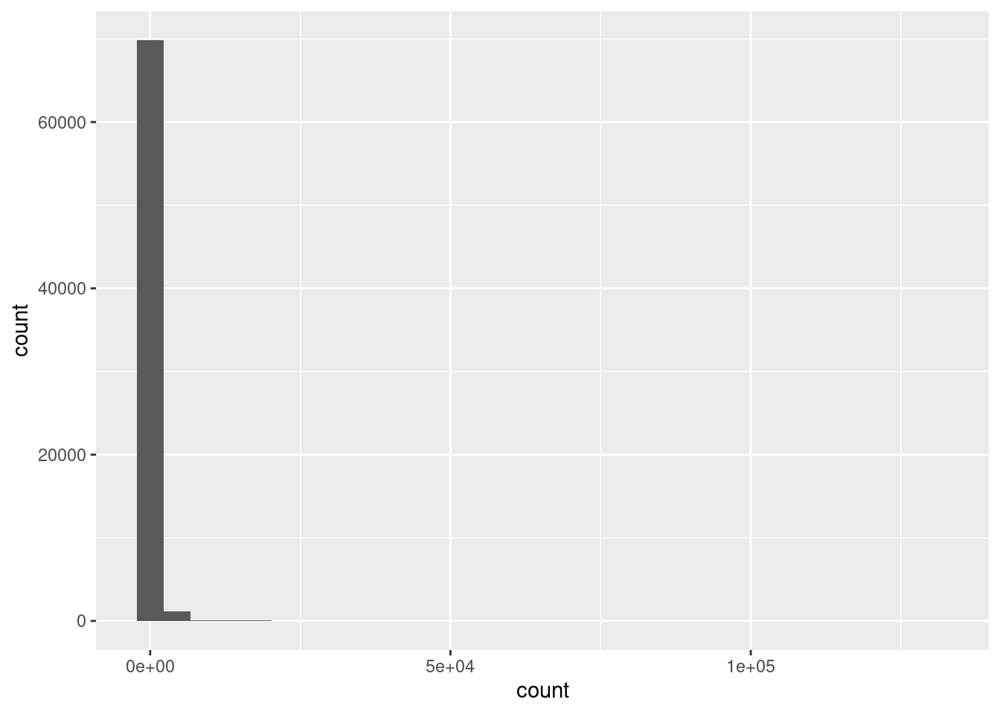
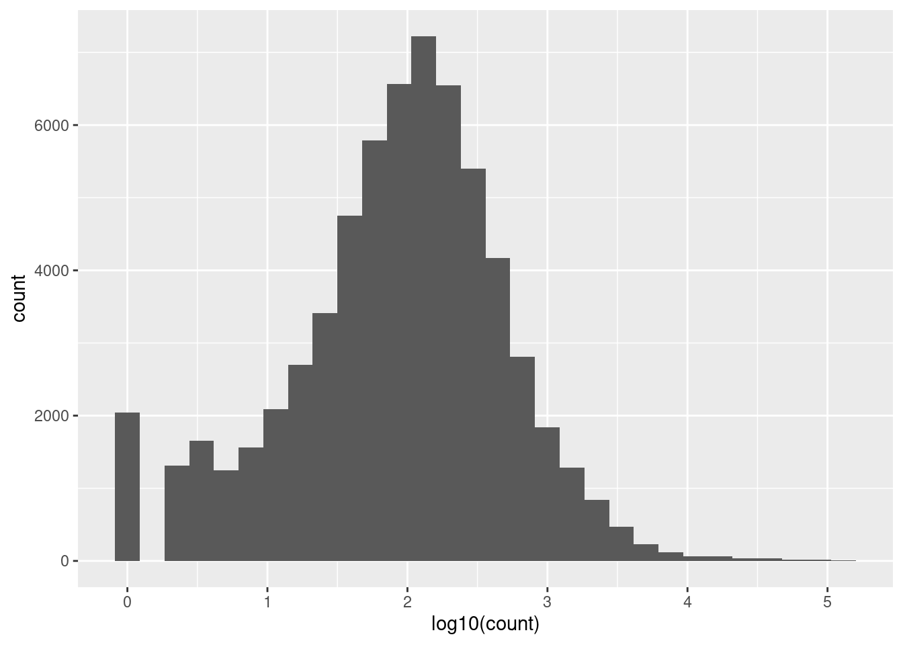
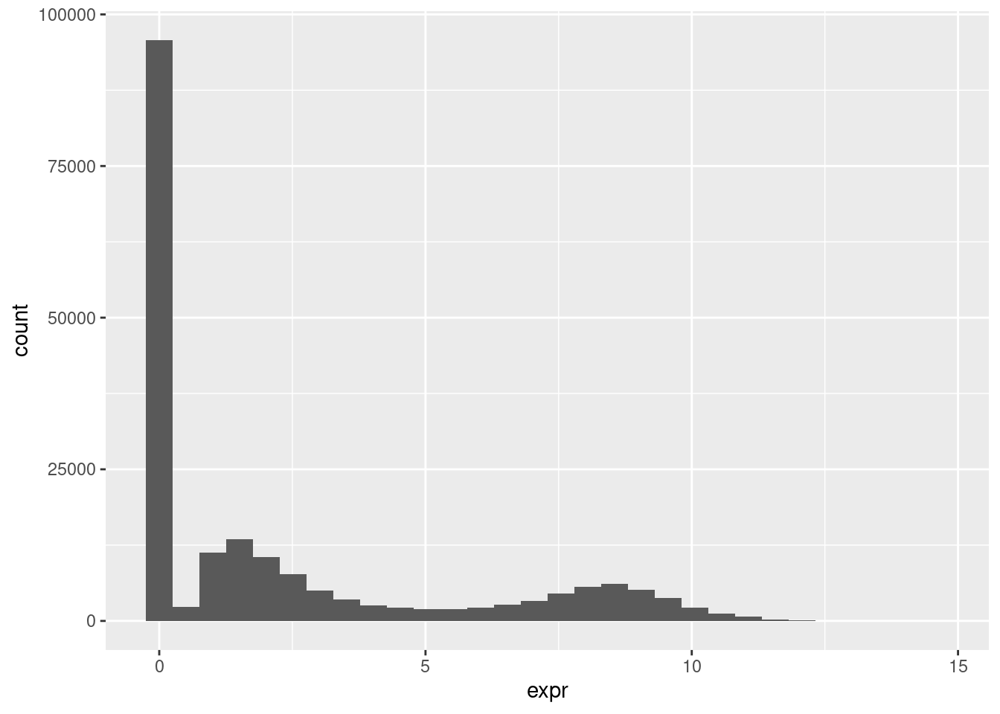
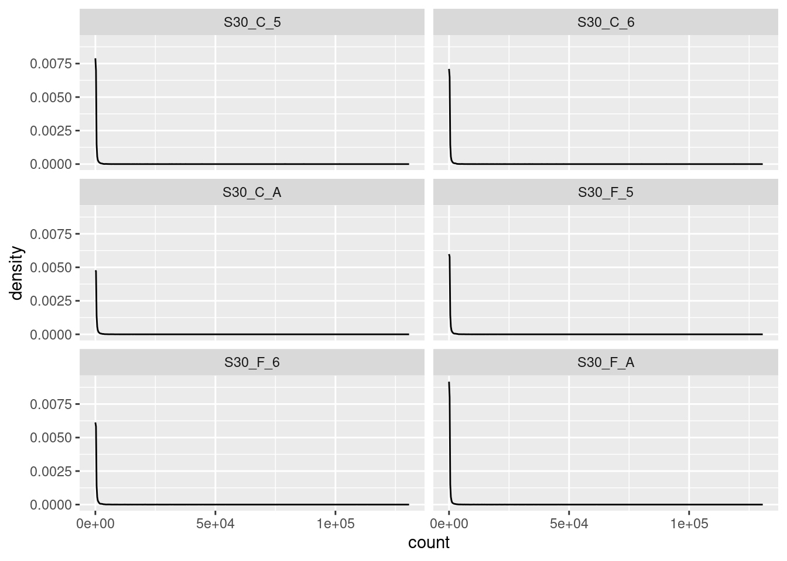
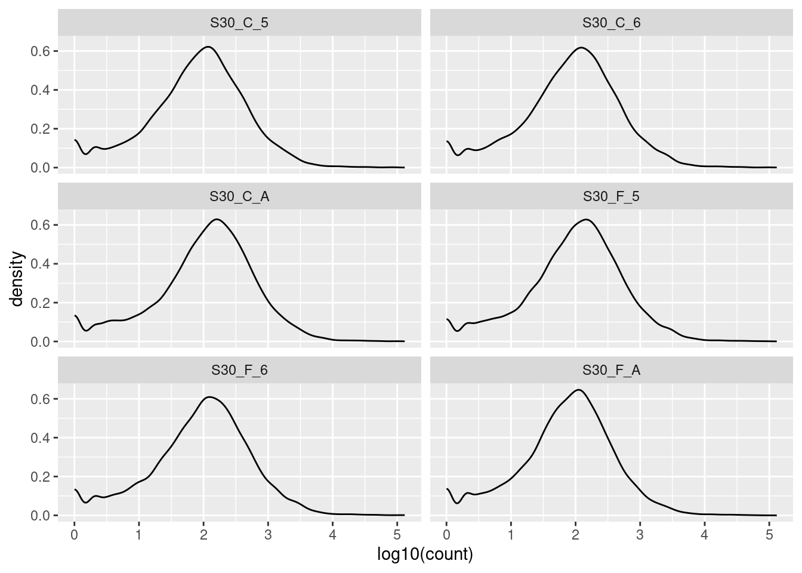
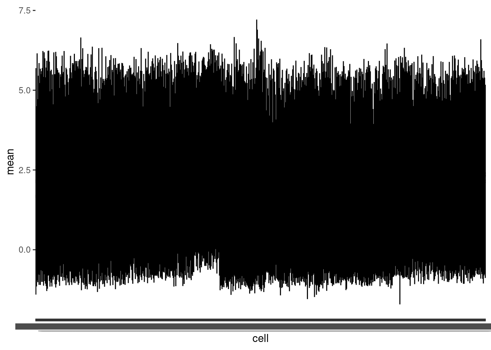
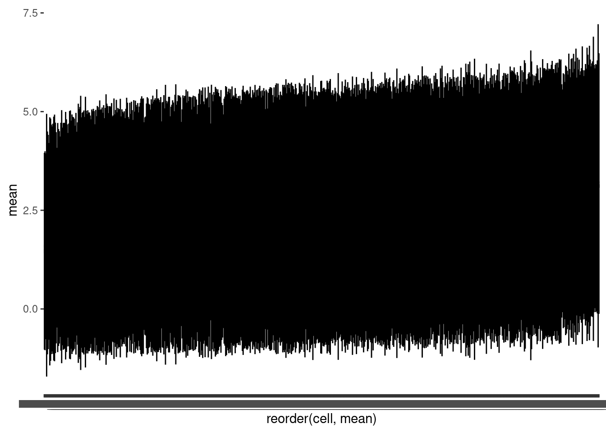
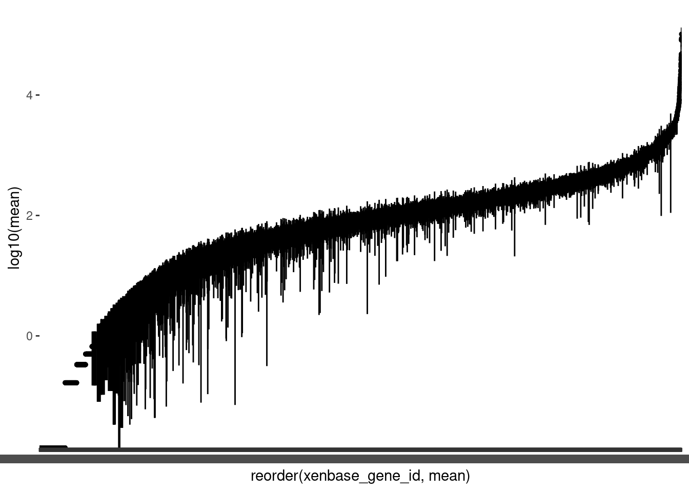
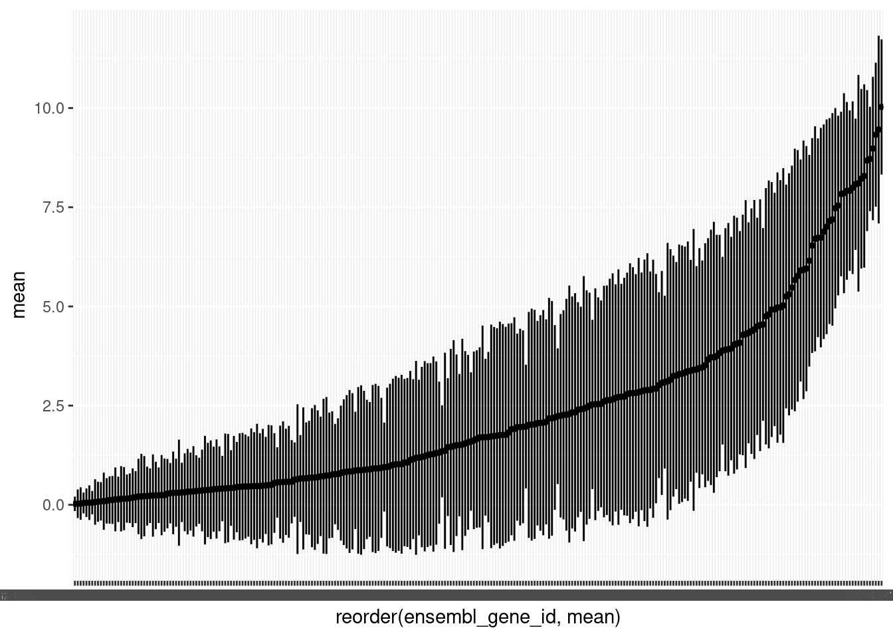

Workshop
Omics 1: Hello data!
Introduction
Session overview
In this workshop you will learn what steps to take to get a good understanding of your ’omics data before you consider any statistical analysis. This is an often overlooked, but very valuable and informative, part of any data pipeline. It gives you the deep understanding of the data structures and values that you will need to code and trouble-shoot code, allows you to spot failed or problematic samples and informs your decisions on quality control.
You should examine all three data sets because the comparisons will give you a stronger understanding of your own project data.
Exercises
Set up a Project
🎬 Start RStudio from the Start menu
🎬 Make an RStudio project. Be deliberate about where you create it so that it is a good place for you
🎬 Use the Files pane to make new folders for the data. I suggest data-raw and data-processed
🎬 Make a new script called workshop-1.R to carry out the rest of the work.
🎬 Record what you do and what you find out. All of it!
🎬 Load tidyverse (Wickham et al. 2019) for importing, summarising, plotting and filtering.
Examine the data in a spreadsheet
These are the three datasets. Each set compromises several files.
🐸 Frog development data:
🐭 Stem cell data:
🍂 xxxx data:
- xxx
- xxx
🎬 Save the files to data-raw and open them in Excel
🎬 Answer the following questions:
- Describe how the sets of data are similar and how they are different.
- What is in the rows and columns of each file?
- How many rows and columns are there in each file? Are these the same? In all cases or some cases? Why?
- Google an id. Where does your search take you? How much information is available?
🎬 Did you record all that??
Import
Now let’s get the data into R and visualise it.
🎬 Import xlaevis_counts_S30.csv, surfaceome_hspc.csv and xxxxxxxx
# 🐸 import the s30 data
s30 <- read_csv("data-raw/xlaevis_counts_S30.csv")# 🐭 import the hspc data
hspc <- read_csv("data-raw/surfaceome_hspc.csv")# 🍂 xxxx import the xxxx data
# prog <- read_csv("")🎬 Check these have the number of rows and column you were expecting and that column types and names are as expected.
Explore
The first task is to get an overview. We want to know
- are there any missing values? If so, how many and how are they distributed?
- how may zeros are there and how are they distributed
- does it look as tough all the samples/cells were equally “successful”? Can we spot any problematic anomalies?
- what is the distribution of values?
If our data collection has gone well we would hope to see approximately the same average expression in each sample or cell of the same type. That is replicates should be similar. We would also expect to see that the average expression of genes varies. We might have genes which are zero in every cell/sample. We will want to to filter those out.
We get this overview by looking at:
The distribution of values across the whole dataset
The distribution of values across the sample/cells (i.e., averaged across genes). This allows us to see variation between samples/cells:
The distribution of values across the genes (i.e., averaged across samples/cells). This allows us to see variation between genes.
Distribution of values across the whole dataset
In all data sets, the values are spread over multiple columns so in order to plot the distribution as a whole, we will need to first use pivot_longer() to put the data in ‘tidy’ format (Wickham 2014) by stacking the columns. We could save a copy of the stacked data and then plot it, but here, I have just piped the stacked data straight into ggplot().
🐸 Frogs
🎬 Pivot the counts (stack the columns) so all the counts are in a single column (count) and pipe into ggplot() to create a histogram:
s30 |>
pivot_longer(cols = -xenbase_gene_id,
names_to = "sample",
values_to = "count") |>
ggplot(aes(x = count)) +
geom_histogram()
This data is very skewed - there are so many low values that we can’t see the tiny bars for the higher values. Logging the counts is a way to make the distribution more visible.
🎬 Repeat the plot on log of the counts.
s30 |>
pivot_longer(cols = -xenbase_gene_id,
names_to = "sample",
values_to = "count") |>
ggplot(aes(x = log10(count))) +
geom_histogram()
I’ve used base 10 only because it easy to convert to the original scale (1 is 10, 2 is 100, 3 is 1000 etc). The warning about rows being removed is expected - these are the counts of 0 since you can’t log a value of 0. The peak at zero suggests quite a few counts of 1. We would expect we would expect the distribution of counts to be roughly log normal because this is expression of all the genes in the genome1. That small peak near the low end suggests that these lower counts might be anomalies.
The excess number of low counts indicates we might want to create a cut off for quality control. The removal of low counts is a common processing step in ’omic data. We will revisit this after we have considered the distribution of counts across samples and genes.
🐭 Mice
🎬 Pivot the expression values (stack the columns) so all the counts are in a single column (expr) and pipe into ggplot() to create a histogram:
hspc |>
pivot_longer(cols = -ensembl_gene_id,
names_to = "cell",
values_to = "expr") |>
ggplot(aes(x = expr)) +
geom_histogram()
This is a very striking distribution. Is it what we are expecting? Again,the excess number of low values is almost certainly anomalous. They will be inaccurate measure and we will want to exclude expression values below (about) 1. We will revisit this after we have considered the distribution of expression across cells and genes.
What about the bimodal appearance of the the ‘real’ values? If we had the whole genome we would not expect to see such a pattern - we’d expect to see a roughly normal distribution2. However, this is a subset of the genome and the nature of the subsetting has had an influence here. These are a subset of cell surface proteins that show a significant difference between at least two of twelve cell subtypes. That is, all of these genes are either high or low.
Distribution of values across the sample/cells
🐸 Frog samples
Summary statistics including the the number of NAs can be seen using the summary(). It is most helpful which you have up to about 30 columns. There is nothing special about the number 30, it is just that text summaries of a larger number of columns are difficult to grasp.
🎬 Get a quick overview of the columns:
# examine all the columns quickly
# works well with smaller numbers of column
summary(s30) xenbase_gene_id S30_C_5 S30_C_6 S30_C_A
Length:11893 Min. : 0.0 Min. : 0.0 Min. : 0.0
Class :character 1st Qu.: 14.0 1st Qu.: 14.0 1st Qu.: 23.0
Mode :character Median : 70.0 Median : 75.0 Median : 107.0
Mean : 317.1 Mean : 335.8 Mean : 426.3
3rd Qu.: 205.0 3rd Qu.: 220.0 3rd Qu.: 301.0
Max. :101746.0 Max. :118708.0 Max. :117945.0
S30_F_5 S30_F_6 S30_F_A
Min. : 0.0 Min. : 0.0 Min. : 0.0
1st Qu.: 19.0 1st Qu.: 17.0 1st Qu.: 16.0
Median : 88.0 Median : 84.0 Median : 69.0
Mean : 376.2 Mean : 376.5 Mean : 260.4
3rd Qu.: 251.0 3rd Qu.: 246.0 3rd Qu.: 187.0
Max. :117573.0 Max. :130672.0 Max. :61531.0 Notice that: - the minimum count is 0 and the maximums are very high in all the columns - the medians are quite a lot lower than the means so the data are skewed (hump to the left, tail to the right) - there must be quite a lot of zeros - the columns are roughly similar and it doesn’t look like there is an anomalous replicate.
To find out how may zeros there are in a column we can make use of the fact that TRUE evaluates to 1 and FALSE evaluates to 0. This means sum(S30_C_5 == 0) gives the number of 0 in the S30_C_5 column
🎬 Find the number of zeros in all six columns:
s30 |>
summarise(sum(S30_C_5 == 0),
sum(S30_C_6 == 0),
sum(S30_C_A == 0),
sum(S30_F_5 == 0),
sum(S30_F_6 == 0),
sum(S30_F_A == 0))# A tibble: 1 × 6
`sum(S30_C_5 == 0)` `sum(S30_C_6 == 0)` `sum(S30_C_A == 0)`
<int> <int> <int>
1 1340 1361 998
# ℹ 3 more variables: `sum(S30_F_5 == 0)` <int>, `sum(S30_F_6 == 0)` <int>,
# `sum(S30_F_A == 0)` <int>There is a better way of doing this that saves you having to repeat so much code - especially useful if you have a lot more than 6 columns. We can use pivot_longer() to put the data in tidy format and then use the group_by() and summarise() approach we have used extensively before.
🎬 Find the number of zeros in all columns:
s30 |>
pivot_longer(cols = -xenbase_gene_id,
names_to = "sample",
values_to = "count") |>
group_by(sample) |>
summarise(n_zero = sum(count == 0))# A tibble: 6 × 2
sample n_zero
<chr> <int>
1 S30_C_5 1340
2 S30_C_6 1361
3 S30_C_A 998
4 S30_F_5 1210
5 S30_F_6 1199
6 S30_F_A 963You could expand to get all the summary information
🎬 Summarise all the samples:
s30 |>
pivot_longer(cols = -xenbase_gene_id,
names_to = "sample",
values_to = "count") |>
group_by(sample) |>
summarise(min = min(count),
lowerq = quantile(count, 0.25),
mean = mean(count),
median = median(count),
upperq = quantile(count, 0.75),
max = max(count),
n_zero = sum(count == 0))# A tibble: 6 × 8
sample min lowerq mean median upperq max n_zero
<chr> <dbl> <dbl> <dbl> <dbl> <dbl> <dbl> <int>
1 S30_C_5 0 14 317. 70 205 101746 1340
2 S30_C_6 0 14 336. 75 220 118708 1361
3 S30_C_A 0 23 426. 107 301 117945 998
4 S30_F_5 0 19 376. 88 251 117573 1210
5 S30_F_6 0 17 376. 84 246 130672 1199
6 S30_F_A 0 16 260. 69 187 61531 963The mean count ranges from 260 to 426.
One advantage this has over using summary() is that the output is a dataframe. For results, this is useful, and makes it easier to:
- write to file
- use in
ggplot() - format in a Quarto report
🎬 Save the summary as a dataframe, s30_summary_samp.
We can write to file using write_csv()
🎬 Write s30_summary_samp to a file called “s30_summary_samp.csv”:
write_csv(s30_summary_samp,
file = "data-processed/s30_summary_samp.csv")Plotting the distribution of values is perhaps the easiest way to understand the data. We could plot each column separately or we can pipe the tidy format of data into ggplot() and make use of facet_wrap()
🎬 Pivot the data and pipe into ggplot:
s30 |>
pivot_longer(cols = -xenbase_gene_id,
names_to = "sample",
values_to = "count") |>
ggplot(aes(count)) +
geom_density() +
facet_wrap(. ~ sample, nrow = 3)
We have many values (11893) so we are not limited to using geom_histogram(). geom_density() gives us a smooth distribution.
We have many low values and a few very high ones which makes it tricky to see the distributions. Logging the counts will make these clearer.
🎬 Repeat the graph but taking the base 10 log of the counts:
s30 |>
pivot_longer(cols = -xenbase_gene_id,
names_to = "sample",
values_to = "count") |>
ggplot(aes(log10(count))) +
geom_density() +
facet_wrap(. ~ sample, nrow = 3)
The key information to take from these plots is:
- the distributions are roughly similar in width, height, location and overall shape so it doesn’t look as though we have any suspect samples
- the peak at zero suggests quite a few counts of 1.
- since we would expect the distribution of counts in each sample to be roughly log normal so that the small rise near the low end, even before the peak at zero, suggests that these lower counts might be anomalies.
The excess number of low counts indicates we might want to create a cut off for quality control. The removal of low counts is a common processing step in ’omic data. We will revisit this after we have considered the distribution of counts across genes (averaged over the samples).
🐭 Mouse cells
We used the summary() function to get an overview of the columns in the frog data. Let’s try that here.
🎬 Get a quick overview of the columns:
summary(hspc) ensembl_gene_id HSPC_001 HSPC_002 HSPC_003
Length:280 Min. : 0.000 Min. : 0.000 Min. : 0.0000
Class :character 1st Qu.: 0.000 1st Qu.: 0.000 1st Qu.: 0.0000
Mode :character Median : 0.000 Median : 0.000 Median : 0.9929
Mean : 2.143 Mean : 1.673 Mean : 2.5964
3rd Qu.: 2.120 3rd Qu.: 2.239 3rd Qu.: 6.1559
Max. :12.567 Max. :11.976 Max. :11.1138
HSPC_004 HSPC_006 HSPC_008 HSPC_009
Min. : 0.000 Min. : 0.000 Min. : 0.000 Min. :0.000
1st Qu.: 0.000 1st Qu.: 0.000 1st Qu.: 0.000 1st Qu.:0.000
Median : 0.000 Median : 1.276 Median : 0.000 Median :0.000
Mean : 1.851 Mean : 2.338 Mean : 2.375 Mean :2.220
3rd Qu.: 2.466 3rd Qu.: 3.536 3rd Qu.: 3.851 3rd Qu.:3.594
Max. :11.133 Max. :10.014 Max. :11.574 Max. :9.997
HSPC_011 HSPC_012 HSPC_014 HSPC_015
Min. : 0.000 Min. : 0.000 Min. : 0.000 Min. : 0.000
1st Qu.: 0.000 1st Qu.: 0.000 1st Qu.: 0.000 1st Qu.: 0.000
Median : 0.000 Median : 1.750 Median : 0.000 Median : 0.000
Mean : 2.285 Mean : 2.431 Mean : 2.295 Mean : 2.515
3rd Qu.: 3.193 3rd Qu.: 3.741 3rd Qu.: 3.150 3rd Qu.: 3.789
Max. :11.260 Max. :10.905 Max. :11.051 Max. :10.751
HSPC_016 HSPC_017 HSPC_018 HSPC_020
Min. : 0.0000 Min. : 0.000 Min. : 0.000 Min. : 0.000
1st Qu.: 0.0000 1st Qu.: 0.000 1st Qu.: 0.000 1st Qu.: 0.000
Median : 0.9488 Median : 0.000 Median : 1.248 Median : 0.000
Mean : 2.6115 Mean : 2.146 Mean : 2.710 Mean : 2.509
3rd Qu.: 5.9412 3rd Qu.: 2.357 3rd Qu.: 6.006 3rd Qu.: 4.470
Max. :11.3082 Max. :12.058 Max. :11.894 Max. :11.281
HSPC_021 HSPC_022 HSPC_023 HSPC_024
Min. : 0.000 Min. : 0.000 Min. : 0.000 Min. : 0.000
1st Qu.: 0.000 1st Qu.: 0.000 1st Qu.: 0.000 1st Qu.: 0.000
Median : 0.000 Median : 0.000 Median : 0.000 Median : 0.000
Mean : 2.170 Mean : 2.287 Mean : 2.314 Mean : 2.195
3rd Qu.: 2.996 3rd Qu.: 3.351 3rd Qu.: 2.749 3rd Qu.: 2.944
Max. :10.709 Max. :11.814 Max. :12.113 Max. :11.279
HSPC_025 HSPC_026 HSPC_027 HSPC_028
Min. : 0.000 Min. : 0.000 Min. : 0.000 Min. : 0.000
1st Qu.: 0.000 1st Qu.: 0.000 1st Qu.: 0.000 1st Qu.: 0.000
Median : 1.572 Median : 1.385 Median : 0.000 Median : 0.000
Mean : 2.710 Mean : 2.721 Mean : 2.458 Mean : 1.906
3rd Qu.: 5.735 3rd Qu.: 6.392 3rd Qu.: 5.496 3rd Qu.: 2.037
Max. :11.309 Max. :10.865 Max. :11.266 Max. :10.777
HSPC_030 HSPC_031 HSPC_033 HSPC_034
Min. : 0.000 Min. : 0.0000 Min. : 0.000 Min. : 0.0000
1st Qu.: 0.000 1st Qu.: 0.0000 1st Qu.: 0.000 1st Qu.: 0.0000
Median : 1.119 Median : 0.9026 Median : 0.000 Median : 0.7984
Mean : 2.338 Mean : 2.3049 Mean : 1.938 Mean : 2.3220
3rd Qu.: 3.005 3rd Qu.: 2.9919 3rd Qu.: 2.434 3rd Qu.: 4.8324
Max. :11.391 Max. :11.1748 Max. :10.808 Max. :10.6707
HSPC_035 HSPC_036 HSPC_037 HSPC_038
Min. : 0.000 Min. : 0.0000 Min. : 0.000 Min. : 0.000
1st Qu.: 0.000 1st Qu.: 0.0000 1st Qu.: 0.000 1st Qu.: 0.000
Median : 0.000 Median : 0.8879 Median : 1.517 Median : 0.000
Mean : 1.810 Mean : 2.6918 Mean : 2.327 Mean : 2.212
3rd Qu.: 2.175 3rd Qu.: 5.9822 3rd Qu.: 3.079 3rd Qu.: 2.867
Max. :11.221 Max. :11.3018 Max. :11.399 Max. :12.275
HSPC_040 HSPC_041 HSPC_042 HSPC_043
Min. : 0.000 Min. : 0.000 Min. : 0.0000 Min. : 0.000
1st Qu.: 0.000 1st Qu.: 0.000 1st Qu.: 0.0000 1st Qu.: 0.000
Median : 0.000 Median : 0.000 Median : 0.8673 Median : 1.342
Mean : 2.509 Mean : 2.492 Mean : 2.3673 Mean : 2.420
3rd Qu.: 3.995 3rd Qu.: 3.943 3rd Qu.: 3.8371 3rd Qu.: 3.731
Max. :11.863 Max. :11.016 Max. :11.4852 Max. :11.123
HSPC_044 HSPC_045 HSPC_046 HSPC_047
Min. : 0.000 Min. : 0.000 Min. : 0.0000 Min. : 0.000
1st Qu.: 0.000 1st Qu.: 0.000 1st Qu.: 0.0000 1st Qu.: 0.000
Median : 0.000 Median : 0.000 Median : 0.8452 Median : 2.195
Mean : 2.382 Mean : 2.277 Mean : 1.9707 Mean : 2.498
3rd Qu.: 3.998 3rd Qu.: 2.843 3rd Qu.: 2.0656 3rd Qu.: 3.937
Max. :10.782 Max. :10.629 Max. :11.0311 Max. :10.180
HSPC_048 HSPC_049 HSPC_050 HSPC_051
Min. : 0.000 Min. : 0.000 Min. : 0.000 Min. : 0.0000
1st Qu.: 0.000 1st Qu.: 0.000 1st Qu.: 0.000 1st Qu.: 0.0000
Median : 1.108 Median : 1.275 Median : 0.000 Median : 0.9757
Mean : 2.289 Mean : 2.453 Mean : 2.673 Mean : 2.2693
3rd Qu.: 2.988 3rd Qu.: 3.819 3rd Qu.: 5.772 3rd Qu.: 3.1644
Max. :10.335 Max. :11.844 Max. :11.301 Max. :10.8692
HSPC_052 HSPC_053 HSPC_054 HSPC_055
Min. : 0.000 Min. : 0.000 Min. : 0.000 Min. : 0.000
1st Qu.: 0.000 1st Qu.: 0.000 1st Qu.: 0.000 1st Qu.: 0.000
Median : 1.509 Median : 0.818 Median : 0.000 Median : 0.000
Mean : 2.561 Mean : 2.684 Mean : 2.107 Mean : 1.959
3rd Qu.: 4.644 3rd Qu.: 5.937 3rd Qu.: 2.568 3rd Qu.: 2.573
Max. :11.674 Max. :11.624 Max. :10.770 Max. :11.105
HSPC_056 HSPC_057 HSPC_058 HSPC_060
Min. : 0.000 Min. : 0.000 Min. : 0.000 Min. : 0.000
1st Qu.: 0.000 1st Qu.: 0.000 1st Qu.: 0.000 1st Qu.: 0.000
Median : 0.000 Median : 0.000 Median : 1.399 Median : 0.000
Mean : 2.295 Mean : 2.430 Mean : 2.296 Mean : 2.112
3rd Qu.: 3.721 3rd Qu.: 3.806 3rd Qu.: 3.199 3rd Qu.: 2.201
Max. :11.627 Max. :10.575 Max. :11.134 Max. :10.631
HSPC_061 HSPC_062 HSPC_063 HSPC_064
Min. : 0.000 Min. : 0.000 Min. : 0.000 Min. : 0.000
1st Qu.: 0.000 1st Qu.: 0.000 1st Qu.: 0.000 1st Qu.: 0.000
Median : 0.000 Median : 0.000 Median : 1.515 Median : 1.101
Mean : 1.934 Mean : 2.129 Mean : 2.508 Mean : 2.696
3rd Qu.: 2.489 3rd Qu.: 2.875 3rd Qu.: 4.895 3rd Qu.: 6.412
Max. :11.190 Max. :10.433 Max. :10.994 Max. :10.873
HSPC_065 HSPC_066 HSPC_067 HSPC_068
Min. : 0.0000 Min. : 0.000 Min. : 0.000 Min. : 0.000
1st Qu.: 0.0000 1st Qu.: 0.000 1st Qu.: 0.000 1st Qu.: 0.000
Median : 0.4852 Median : 0.000 Median : 1.441 Median : 0.000
Mean : 2.2676 Mean : 2.136 Mean : 2.480 Mean : 2.449
3rd Qu.: 3.8217 3rd Qu.: 2.632 3rd Qu.: 3.548 3rd Qu.: 4.517
Max. :10.9023 Max. :11.608 Max. :11.147 Max. :10.901
HSPC_069 HSPC_070 HSPC_071 HSPC_072
Min. : 0.000 Min. : 0.0000 Min. : 0.0000 Min. : 0.000
1st Qu.: 0.000 1st Qu.: 0.0000 1st Qu.: 0.0000 1st Qu.: 0.000
Median : 0.000 Median : 0.8949 Median : 0.9272 Median : 1.121
Mean : 2.406 Mean : 2.5826 Mean : 2.2844 Mean : 2.545
3rd Qu.: 4.705 3rd Qu.: 5.4749 3rd Qu.: 3.2531 3rd Qu.: 4.939
Max. :11.258 Max. :11.6715 Max. :10.7886 Max. :11.397
HSPC_073 HSPC_074 HSPC_075 HSPC_076
Min. : 0.000 Min. : 0.00 Min. : 0.000 Min. : 0.000
1st Qu.: 0.000 1st Qu.: 0.00 1st Qu.: 0.000 1st Qu.: 0.000
Median : 0.000 Median : 0.00 Median : 1.674 Median : 0.000
Mean : 2.491 Mean : 2.46 Mean : 2.413 Mean : 2.289
3rd Qu.: 4.134 3rd Qu.: 3.40 3rd Qu.: 3.013 3rd Qu.: 2.550
Max. :11.844 Max. :11.66 Max. :11.976 Max. :12.136
HSPC_077 HSPC_078 HSPC_079 HSPC_080
Min. : 0.0000 Min. : 0.000 Min. : 0.000 Min. : 0.000
1st Qu.: 0.0000 1st Qu.: 0.000 1st Qu.: 0.000 1st Qu.: 0.000
Median : 0.6624 Median : 1.492 Median : 1.384 Median : 1.013
Mean : 2.4336 Mean : 2.637 Mean : 2.432 Mean : 2.881
3rd Qu.: 5.4937 3rd Qu.: 5.472 3rd Qu.: 3.617 3rd Qu.: 7.220
Max. :11.6020 Max. :10.673 Max. :11.199 Max. :11.836
HSPC_081 HSPC_082 HSPC_083 HSPC_084
Min. : 0.0000 Min. : 0.000 Min. : 0.000 Min. : 0.000
1st Qu.: 0.0000 1st Qu.: 0.000 1st Qu.: 0.000 1st Qu.: 0.000
Median : 0.7671 Median : 0.000 Median : 1.896 Median : 1.128
Mean : 1.9227 Mean : 2.474 Mean : 2.864 Mean : 2.289
3rd Qu.: 1.6349 3rd Qu.: 3.488 3rd Qu.: 5.101 3rd Qu.: 2.792
Max. :11.4681 Max. :11.962 Max. :10.865 Max. :11.834
HSPC_085 HSPC_087 HSPC_088 HSPC_089
Min. : 0.000 Min. : 0.000 Min. : 0.000 Min. : 0.000
1st Qu.: 0.000 1st Qu.: 0.000 1st Qu.: 0.000 1st Qu.: 0.000
Median : 0.000 Median : 0.000 Median : 0.000 Median : 0.000
Mean : 2.157 Mean : 2.314 Mean : 2.202 Mean : 2.329
3rd Qu.: 3.010 3rd Qu.: 3.245 3rd Qu.: 2.092 3rd Qu.: 3.246
Max. :10.809 Max. :10.976 Max. :11.362 Max. :11.301
HSPC_090 HSPC_094 HSPC_095 HSPC_096
Min. : 0.000 Min. : 0.000 Min. : 0.000 Min. :0.000
1st Qu.: 0.000 1st Qu.: 0.000 1st Qu.: 0.000 1st Qu.:0.000
Median : 0.000 Median : 0.000 Median : 2.055 Median :0.000
Mean : 2.286 Mean : 2.186 Mean : 2.756 Mean :2.348
3rd Qu.: 4.174 3rd Qu.: 2.002 3rd Qu.: 4.370 3rd Qu.:4.482
Max. :11.124 Max. :11.694 Max. :11.385 Max. :9.601
HSPC_098 HSPC_099 HSPC_100 HSPC_101
Min. : 0.000 Min. : 0.000 Min. : 0.000 Min. : 0.000
1st Qu.: 0.000 1st Qu.: 0.000 1st Qu.: 0.000 1st Qu.: 0.000
Median : 0.000 Median : 0.000 Median : 0.000 Median : 1.007
Mean : 2.209 Mean : 2.082 Mean : 2.313 Mean : 2.587
3rd Qu.: 3.354 3rd Qu.: 2.505 3rd Qu.: 2.775 3rd Qu.: 5.334
Max. :11.070 Max. :10.200 Max. :11.452 Max. :11.456
HSPC_102 HSPC_103 HSPC_104 HSPC_105
Min. : 0.000 Min. : 0.000 Min. : 0.000 Min. : 0.000
1st Qu.: 0.000 1st Qu.: 0.000 1st Qu.: 0.000 1st Qu.: 0.000
Median : 1.111 Median : 0.000 Median : 0.000 Median : 0.000
Mean : 2.210 Mean : 2.853 Mean : 2.099 Mean : 1.893
3rd Qu.: 2.993 3rd Qu.: 6.123 3rd Qu.: 2.720 3rd Qu.: 2.129
Max. :11.153 Max. :11.328 Max. :10.746 Max. :10.721
HSPC_106 HSPC_107 HSPC_108 HSPC_109
Min. : 0.000 Min. : 0.000 Min. : 0.000 Min. : 0.000
1st Qu.: 0.000 1st Qu.: 0.000 1st Qu.: 0.000 1st Qu.: 0.000
Median : 0.000 Median : 0.000 Median : 0.000 Median : 1.595
Mean : 1.980 Mean : 2.279 Mean : 2.296 Mean : 2.420
3rd Qu.: 2.425 3rd Qu.: 3.396 3rd Qu.: 3.361 3rd Qu.: 4.006
Max. :10.919 Max. :10.982 Max. :11.744 Max. :10.463
HSPC_110 HSPC_111 HSPC_114 HSPC_115
Min. : 0.000 Min. : 0.000 Min. : 0.0000 Min. : 0.000
1st Qu.: 0.000 1st Qu.: 0.000 1st Qu.: 0.0000 1st Qu.: 0.000
Median : 0.000 Median : 0.000 Median : 0.9173 Median : 2.349
Mean : 2.159 Mean : 1.800 Mean : 1.8376 Mean : 2.943
3rd Qu.: 2.667 3rd Qu.: 2.214 3rd Qu.: 1.8741 3rd Qu.: 6.223
Max. :11.121 Max. :11.109 Max. :10.4645 Max. :11.124
HSPC_117 HSPC_118 HSPC_119 HSPC_120
Min. : 0.000 Min. : 0.000 Min. : 0.000 Min. : 0.000
1st Qu.: 0.000 1st Qu.: 0.000 1st Qu.: 0.000 1st Qu.: 0.000
Median : 0.000 Median : 0.000 Median : 0.000 Median : 1.187
Mean : 1.919 Mean : 1.855 Mean : 2.289 Mean : 2.041
3rd Qu.: 2.306 3rd Qu.: 2.387 3rd Qu.: 3.292 3rd Qu.: 2.610
Max. :14.579 Max. :11.119 Max. :12.534 Max. :11.438
HSPC_121 HSPC_122 HSPC_123 HSPC_125
Min. : 0.000 Min. : 0.000 Min. : 0.000 Min. : 0.000
1st Qu.: 0.000 1st Qu.: 0.000 1st Qu.: 0.000 1st Qu.: 0.000
Median : 0.000 Median : 0.000 Median : 0.000 Median : 0.000
Mean : 2.803 Mean : 2.072 Mean : 2.200 Mean : 2.116
3rd Qu.: 5.798 3rd Qu.: 2.140 3rd Qu.: 3.215 3rd Qu.: 2.409
Max. :11.320 Max. :11.013 Max. :11.163 Max. :11.368
HSPC_126 HSPC_127 HSPC_130 HSPC_131
Min. : 0.0000 Min. : 0.000 Min. : 0.000 Min. : 0.000
1st Qu.: 0.0000 1st Qu.: 0.000 1st Qu.: 0.000 1st Qu.: 0.000
Median : 0.9381 Median : 1.147 Median : 0.000 Median : 0.000
Mean : 2.0014 Mean : 2.287 Mean : 2.551 Mean : 2.240
3rd Qu.: 2.2215 3rd Qu.: 3.051 3rd Qu.: 3.968 3rd Qu.: 3.773
Max. :10.9622 Max. :11.028 Max. :10.585 Max. :11.216
HSPC_132 HSPC_133 HSPC_134 HSPC_135
Min. : 0.0000 Min. : 0.000 Min. : 0.000 Min. : 0.000
1st Qu.: 0.0000 1st Qu.: 0.000 1st Qu.: 0.000 1st Qu.: 0.000
Median : 0.4438 Median : 2.234 Median : 0.000 Median : 0.000
Mean : 2.1659 Mean : 2.582 Mean : 2.335 Mean : 2.402
3rd Qu.: 1.8512 3rd Qu.: 4.591 3rd Qu.: 3.659 3rd Qu.: 4.134
Max. :10.6431 Max. :10.730 Max. :11.995 Max. :11.573
HSPC_136 HSPC_138 HSPC_139 HSPC_140
Min. : 0.000 Min. : 0.0000 Min. : 0.000 Min. : 0.000
1st Qu.: 0.000 1st Qu.: 0.0000 1st Qu.: 0.000 1st Qu.: 0.000
Median : 0.000 Median : 0.7062 Median : 2.078 Median : 0.000
Mean : 2.546 Mean : 2.1054 Mean : 2.876 Mean : 2.220
3rd Qu.: 5.219 3rd Qu.: 1.8181 3rd Qu.: 4.604 3rd Qu.: 3.716
Max. :11.281 Max. :11.1177 Max. :11.013 Max. :10.893
HSPC_141 HSPC_142 HSPC_143 HSPC_144
Min. : 0.000 Min. : 0.000 Min. : 0.000 Min. : 0.000
1st Qu.: 0.000 1st Qu.: 0.000 1st Qu.: 0.000 1st Qu.: 0.000
Median : 0.000 Median : 0.000 Median : 0.000 Median : 1.075
Mean : 2.385 Mean : 2.232 Mean : 2.592 Mean : 2.004
3rd Qu.: 4.149 3rd Qu.: 2.523 3rd Qu.: 4.248 3rd Qu.: 2.441
Max. :11.099 Max. :11.902 Max. :12.932 Max. :11.121
HSPC_146 HSPC_148 HSPC_149 HSPC_151
Min. : 0.000 Min. : 0.000 Min. : 0.000 Min. : 0.0000
1st Qu.: 0.000 1st Qu.: 0.000 1st Qu.: 0.000 1st Qu.: 0.0000
Median : 0.000 Median : 0.000 Median : 0.000 Median : 0.9711
Mean : 2.418 Mean : 2.385 Mean : 2.314 Mean : 2.4375
3rd Qu.: 4.430 3rd Qu.: 3.288 3rd Qu.: 3.139 3rd Qu.: 3.2523
Max. :10.385 Max. :12.823 Max. :10.910 Max. :11.7148
HSPC_152 HSPC_153 HSPC_154 HSPC_155
Min. : 0.000 Min. : 0.000 Min. : 0.000 Min. : 0.000
1st Qu.: 0.000 1st Qu.: 0.000 1st Qu.: 0.000 1st Qu.: 0.000
Median : 0.000 Median : 0.000 Median : 0.000 Median : 0.000
Mean : 2.247 Mean : 2.415 Mean : 2.476 Mean : 2.468
3rd Qu.: 3.293 3rd Qu.: 3.524 3rd Qu.: 4.653 3rd Qu.: 3.621
Max. :12.463 Max. :12.205 Max. :11.437 Max. :11.207
HSPC_156 HSPC_157 HSPC_158 HSPC_159
Min. : 0.0000 Min. : 0.000 Min. : 0.000 Min. : 0.000
1st Qu.: 0.0000 1st Qu.: 0.000 1st Qu.: 0.000 1st Qu.: 0.000
Median : 0.5545 Median : 1.993 Median : 0.000 Median : 0.000
Mean : 2.2297 Mean : 2.493 Mean : 2.119 Mean : 2.461
3rd Qu.: 2.0977 3rd Qu.: 3.692 3rd Qu.: 2.930 3rd Qu.: 3.340
Max. :11.2431 Max. :10.539 Max. :11.336 Max. :11.123
HSPC_161 HSPC_162 HSPC_164 HSPC_165
Min. : 0.000 Min. : 0.0000 Min. : 0.000 Min. : 0.000
1st Qu.: 0.000 1st Qu.: 0.0000 1st Qu.: 0.000 1st Qu.: 0.000
Median : 1.701 Median : 0.7152 Median : 0.000 Median : 0.000
Mean : 2.533 Mean : 2.3473 Mean : 2.161 Mean : 2.084
3rd Qu.: 3.616 3rd Qu.: 2.4973 3rd Qu.: 2.553 3rd Qu.: 3.020
Max. :11.429 Max. :11.0065 Max. :11.865 Max. :10.282
HSPC_166 HSPC_168 HSPC_169 HSPC_170
Min. : 0.000 Min. : 0.000 Min. : 0.000 Min. : 0.000
1st Qu.: 0.000 1st Qu.: 0.000 1st Qu.: 0.000 1st Qu.: 0.000
Median : 0.000 Median : 1.002 Median : 1.158 Median : 0.000
Mean : 2.177 Mean : 2.390 Mean : 2.038 Mean : 2.401
3rd Qu.: 3.296 3rd Qu.: 4.701 3rd Qu.: 2.232 3rd Qu.: 3.703
Max. :11.427 Max. :10.393 Max. :10.447 Max. :11.288
HSPC_171 HSPC_172 HSPC_173 HSPC_174
Min. : 0.000 Min. : 0.0000 Min. : 0.000 Min. : 0.000
1st Qu.: 0.000 1st Qu.: 0.0000 1st Qu.: 0.000 1st Qu.: 0.000
Median : 1.525 Median : 0.7679 Median : 0.000 Median : 1.257
Mean : 2.312 Mean : 2.3115 Mean : 2.288 Mean : 2.444
3rd Qu.: 2.729 3rd Qu.: 3.7889 3rd Qu.: 3.037 3rd Qu.: 4.996
Max. :10.468 Max. :11.1442 Max. :11.074 Max. :11.095
HSPC_175 HSPC_176 HSPC_177 HSPC_178
Min. : 0.000 Min. : 0.000 Min. : 0.000 Min. : 0.000
1st Qu.: 0.000 1st Qu.: 0.000 1st Qu.: 0.000 1st Qu.: 0.000
Median : 1.496 Median : 2.024 Median : 1.971 Median : 1.003
Mean : 2.613 Mean : 2.593 Mean : 2.421 Mean : 2.277
3rd Qu.: 4.845 3rd Qu.: 4.092 3rd Qu.: 3.665 3rd Qu.: 2.812
Max. :11.235 Max. :10.379 Max. :10.864 Max. :10.979
HSPC_179 HSPC_180 HSPC_181 HSPC_182
Min. : 0.000 Min. : 0.000 Min. : 0.000 Min. : 0.000
1st Qu.: 0.000 1st Qu.: 0.000 1st Qu.: 0.000 1st Qu.: 0.000
Median : 0.836 Median : 1.544 Median : 2.030 Median : 0.000
Mean : 2.205 Mean : 2.556 Mean : 2.890 Mean : 2.363
3rd Qu.: 2.300 3rd Qu.: 4.798 3rd Qu.: 4.846 3rd Qu.: 3.779
Max. :11.244 Max. :10.802 Max. :10.945 Max. :10.399
HSPC_183 HSPC_185 HSPC_186 HSPC_187
Min. : 0.000 Min. : 0.000 Min. : 0.000 Min. : 0.000
1st Qu.: 0.000 1st Qu.: 0.000 1st Qu.: 0.000 1st Qu.: 0.000
Median : 1.020 Median : 0.000 Median : 1.606 Median : 0.000
Mean : 2.242 Mean : 2.708 Mean : 2.053 Mean : 2.360
3rd Qu.: 2.842 3rd Qu.: 4.855 3rd Qu.: 2.834 3rd Qu.: 3.541
Max. :10.530 Max. :11.079 Max. :11.016 Max. :10.923
HSPC_189 HSPC_190 HSPC_191 HSPC_192
Min. : 0.000 Min. : 0.000 Min. : 0.000 Min. : 0.000
1st Qu.: 0.000 1st Qu.: 0.000 1st Qu.: 0.000 1st Qu.: 0.000
Median : 0.000 Median : 0.000 Median : 0.000 Median : 1.412
Mean : 2.120 Mean : 2.417 Mean : 2.175 Mean : 2.192
3rd Qu.: 2.652 3rd Qu.: 5.226 3rd Qu.: 2.574 3rd Qu.: 2.669
Max. :11.300 Max. :11.023 Max. :11.454 Max. :10.225
HSPC_193 HSPC_195 HSPC_196 HSPC_198
Min. :0.0000 Min. : 0.0000 Min. : 0.000 Min. : 0.000
1st Qu.:0.0000 1st Qu.: 0.0000 1st Qu.: 0.000 1st Qu.: 0.000
Median :0.9691 Median : 0.9175 Median : 1.379 Median : 1.105
Mean :2.5448 Mean : 2.7307 Mean : 2.327 Mean : 2.155
3rd Qu.:5.1191 3rd Qu.: 5.8899 3rd Qu.: 2.625 3rd Qu.: 2.756
Max. :9.8728 Max. :10.4757 Max. :11.319 Max. :11.405
HSPC_199 HSPC_200 HSPC_202 HSPC_203
Min. : 0.000 Min. : 0.000 Min. : 0.0000 Min. : 0.000
1st Qu.: 0.000 1st Qu.: 0.000 1st Qu.: 0.0000 1st Qu.: 0.000
Median : 1.069 Median : 1.572 Median : 0.8045 Median : 1.311
Mean : 1.909 Mean : 2.346 Mean : 2.1384 Mean : 2.058
3rd Qu.: 2.431 3rd Qu.: 2.791 3rd Qu.: 2.0569 3rd Qu.: 2.792
Max. :11.377 Max. :11.334 Max. :11.0516 Max. :10.852
HSPC_204 HSPC_205 HSPC_206 HSPC_207
Min. : 0.000 Min. : 0.000 Min. : 0.000 Min. : 0.0000
1st Qu.: 0.000 1st Qu.: 0.000 1st Qu.: 0.000 1st Qu.: 0.0000
Median : 1.342 Median : 1.997 Median : 1.076 Median : 0.9235
Mean : 2.716 Mean : 2.520 Mean : 2.426 Mean : 2.2974
3rd Qu.: 5.611 3rd Qu.: 4.244 3rd Qu.: 4.057 3rd Qu.: 2.6736
Max. :10.269 Max. :10.817 Max. :11.866 Max. :11.4287
HSPC_208 HSPC_210 HSPC_211 HSPC_212
Min. : 0.000 Min. : 0.000 Min. : 0.000 Min. : 0.000
1st Qu.: 0.000 1st Qu.: 0.000 1st Qu.: 0.000 1st Qu.: 0.000
Median : 2.263 Median : 1.021 Median : 1.351 Median : 0.000
Mean : 2.893 Mean : 2.315 Mean : 2.425 Mean : 2.336
3rd Qu.: 5.014 3rd Qu.: 2.676 3rd Qu.: 3.820 3rd Qu.: 3.443
Max. :11.375 Max. :12.208 Max. :11.360 Max. :11.808
HSPC_213 HSPC_214 HSPC_215 HSPC_216
Min. : 0.000 Min. : 0.0000 Min. : 0.000 Min. : 0.0000
1st Qu.: 0.000 1st Qu.: 0.0000 1st Qu.: 0.000 1st Qu.: 0.0000
Median : 1.270 Median : 0.9195 Median : 1.653 Median : 0.8022
Mean : 2.483 Mean : 2.1976 Mean : 2.563 Mean : 2.6010
3rd Qu.: 4.903 3rd Qu.: 2.7139 3rd Qu.: 4.344 3rd Qu.: 6.0076
Max. :11.548 Max. :10.6947 Max. :10.933 Max. :11.2119
HSPC_218 HSPC_219 HSPC_220 HSPC_221
Min. : 0.000 Min. : 0.000 Min. : 0.000 Min. : 0.000
1st Qu.: 0.000 1st Qu.: 0.000 1st Qu.: 0.000 1st Qu.: 0.000
Median : 0.000 Median : 1.027 Median : 0.000 Median : 1.269
Mean : 2.467 Mean : 2.291 Mean : 2.449 Mean : 2.641
3rd Qu.: 3.980 3rd Qu.: 2.853 3rd Qu.: 4.486 3rd Qu.: 3.617
Max. :11.654 Max. :10.801 Max. :10.410 Max. :11.651
HSPC_222 HSPC_223 HSPC_224 HSPC_225
Min. : 0.000 Min. : 0.000 Min. : 0.000 Min. : 0.000
1st Qu.: 0.000 1st Qu.: 0.000 1st Qu.: 0.000 1st Qu.: 0.000
Median : 1.449 Median : 0.000 Median : 0.000 Median : 0.000
Mean : 2.262 Mean : 2.271 Mean : 2.492 Mean : 2.585
3rd Qu.: 3.271 3rd Qu.: 3.727 3rd Qu.: 3.769 3rd Qu.: 5.253
Max. :11.133 Max. :12.000 Max. :11.114 Max. :11.671
HSPC_227 HSPC_228 HSPC_229 HSPC_230
Min. : 0.000 Min. : 0.000 Min. : 0.000 Min. : 0.000
1st Qu.: 0.000 1st Qu.: 0.000 1st Qu.: 0.000 1st Qu.: 0.000
Median : 0.000 Median : 0.000 Median : 2.484 Median : 0.000
Mean : 2.492 Mean : 2.370 Mean : 2.742 Mean : 2.586
3rd Qu.: 3.692 3rd Qu.: 4.488 3rd Qu.: 4.836 3rd Qu.: 5.188
Max. :10.815 Max. :10.165 Max. :11.143 Max. :10.734
HSPC_231 HSPC_232 HSPC_233 HSPC_235
Min. : 0.000 Min. : 0.000 Min. : 0.000 Min. : 0.000
1st Qu.: 0.000 1st Qu.: 0.000 1st Qu.: 0.000 1st Qu.: 0.000
Median : 0.000 Median : 1.869 Median : 1.254 Median : 0.000
Mean : 2.379 Mean : 2.264 Mean : 2.531 Mean : 2.552
3rd Qu.: 4.787 3rd Qu.: 3.163 3rd Qu.: 3.925 3rd Qu.: 4.389
Max. :10.790 Max. :12.098 Max. :11.533 Max. :11.765
HSPC_236 HSPC_237 HSPC_239 HSPC_240
Min. : 0.000 Min. : 0.000 Min. : 0.000 Min. : 0.000
1st Qu.: 0.000 1st Qu.: 0.000 1st Qu.: 0.000 1st Qu.: 0.000
Median : 0.000 Median : 0.000 Median : 2.207 Median : 0.892
Mean : 2.205 Mean : 2.457 Mean : 2.656 Mean : 2.049
3rd Qu.: 3.748 3rd Qu.: 3.488 3rd Qu.: 4.904 3rd Qu.: 2.617
Max. :10.234 Max. :10.630 Max. :10.858 Max. :10.528
HSPC_243 HSPC_244 HSPC_245 HSPC_246
Min. : 0.000 Min. : 0.0000 Min. : 0.000 Min. : 0.000
1st Qu.: 0.000 1st Qu.: 0.0000 1st Qu.: 0.000 1st Qu.: 0.000
Median : 1.118 Median : 0.7872 Median : 1.459 Median : 1.629
Mean : 2.311 Mean : 2.6638 Mean : 2.360 Mean : 2.321
3rd Qu.: 2.574 3rd Qu.: 6.2395 3rd Qu.: 3.000 3rd Qu.: 3.229
Max. :11.069 Max. :10.0730 Max. :11.297 Max. :11.237
HSPC_247 HSPC_248 HSPC_249 HSPC_250
Min. :0.000 Min. : 0.0000 Min. : 0.000 Min. : 0.000
1st Qu.:0.000 1st Qu.: 0.0000 1st Qu.: 0.000 1st Qu.: 0.000
Median :0.000 Median : 0.8453 Median : 0.000 Median : 1.278
Mean :2.537 Mean : 2.3719 Mean : 1.803 Mean : 2.751
3rd Qu.:4.687 3rd Qu.: 3.3090 3rd Qu.: 2.335 3rd Qu.: 6.330
Max. :9.821 Max. :10.8128 Max. :10.568 Max. :11.256
HSPC_251 HSPC_253 HSPC_254 HSPC_255
Min. : 0.0000 Min. : 0.000 Min. : 0.000 Min. : 0.0000
1st Qu.: 0.0000 1st Qu.: 0.000 1st Qu.: 0.000 1st Qu.: 0.0000
Median : 0.9714 Median : 1.265 Median : 0.000 Median : 0.9098
Mean : 2.5626 Mean : 2.492 Mean : 2.177 Mean : 2.1878
3rd Qu.: 4.9167 3rd Qu.: 4.185 3rd Qu.: 3.437 3rd Qu.: 2.4313
Max. :11.1252 Max. :10.435 Max. :10.422 Max. :10.7952
HSPC_256 HSPC_257 HSPC_258 HSPC_261
Min. : 0.0000 Min. : 0.000 Min. :0.0000 Min. : 0.0000
1st Qu.: 0.0000 1st Qu.: 0.000 1st Qu.:0.0000 1st Qu.: 0.0000
Median : 0.8248 Median : 1.241 Median :0.8526 Median : 0.5387
Mean : 2.1051 Mean : 2.630 Mean :2.0295 Mean : 2.1419
3rd Qu.: 2.3331 3rd Qu.: 5.646 3rd Qu.:3.0784 3rd Qu.: 1.9352
Max. :13.0375 Max. :11.499 Max. :9.9116 Max. :11.3247
HSPC_263 HSPC_264 HSPC_265 HSPC_266
Min. : 0.000 Min. : 0.000 Min. : 0.000 Min. : 0.000
1st Qu.: 0.000 1st Qu.: 0.000 1st Qu.: 0.000 1st Qu.: 0.000
Median : 1.538 Median : 1.426 Median : 1.883 Median : 1.839
Mean : 2.613 Mean : 2.374 Mean : 3.177 Mean : 2.833
3rd Qu.: 4.485 3rd Qu.: 3.238 3rd Qu.: 5.702 3rd Qu.: 5.801
Max. :10.571 Max. :11.136 Max. :12.436 Max. :10.338
HSPC_267 HSPC_268 HSPC_269 HSPC_270
Min. : 0.0000 Min. : 0.0000 Min. : 0.0000 Min. : 0.0000
1st Qu.: 0.0000 1st Qu.: 0.0000 1st Qu.: 0.0000 1st Qu.: 0.0000
Median : 0.9675 Median : 0.7787 Median : 0.8632 Median : 0.9637
Mean : 2.4910 Mean : 2.5342 Mean : 2.4029 Mean : 2.6899
3rd Qu.: 3.5345 3rd Qu.: 4.9871 3rd Qu.: 4.3176 3rd Qu.: 5.7266
Max. :10.0139 Max. :10.7848 Max. :11.2689 Max. :11.1648
HSPC_271 HSPC_274 HSPC_275 HSPC_276
Min. : 0.000 Min. : 0.000 Min. : 0.0000 Min. : 0.000
1st Qu.: 0.000 1st Qu.: 0.000 1st Qu.: 0.0000 1st Qu.: 0.000
Median : 1.352 Median : 1.730 Median : 0.5252 Median : 1.156
Mean : 2.493 Mean : 2.382 Mean : 2.5375 Mean : 2.485
3rd Qu.: 4.430 3rd Qu.: 3.360 3rd Qu.: 5.7329 3rd Qu.: 4.623
Max. :11.636 Max. :11.165 Max. :11.6234 Max. :11.562
HSPC_278 HSPC_279 HSPC_280 HSPC_281
Min. : 0.000 Min. : 0.000 Min. : 0.000 Min. : 0.000
1st Qu.: 0.000 1st Qu.: 0.000 1st Qu.: 0.000 1st Qu.: 0.000
Median : 0.000 Median : 1.487 Median : 1.608 Median : 2.611
Mean : 2.161 Mean : 2.497 Mean : 2.580 Mean : 2.737
3rd Qu.: 2.270 3rd Qu.: 3.813 3rd Qu.: 3.985 3rd Qu.: 4.731
Max. :11.734 Max. :10.900 Max. :11.673 Max. :10.076
HSPC_282 HSPC_283 HSPC_285 HSPC_286
Min. : 0.0000 Min. : 0.000 Min. : 0.0000 Min. : 0.000
1st Qu.: 0.0000 1st Qu.: 0.000 1st Qu.: 0.0000 1st Qu.: 0.000
Median : 0.7021 Median : 1.911 Median : 0.8658 Median : 1.178
Mean : 2.4272 Mean : 2.534 Mean : 2.4868 Mean : 2.293
3rd Qu.: 4.1254 3rd Qu.: 3.888 3rd Qu.: 5.3804 3rd Qu.: 2.597
Max. :11.1094 Max. :10.258 Max. :10.5533 Max. :11.112
HSPC_287 HSPC_288 HSPC_289 HSPC_290
Min. : 0.000 Min. : 0.0000 Min. : 0.000 Min. : 0.000
1st Qu.: 0.000 1st Qu.: 0.0000 1st Qu.: 0.000 1st Qu.: 0.000
Median : 1.049 Median : 0.8548 Median : 1.953 Median : 1.176
Mean : 2.775 Mean : 2.6412 Mean : 2.925 Mean : 2.304
3rd Qu.: 5.476 3rd Qu.: 5.4204 3rd Qu.: 5.613 3rd Qu.: 3.445
Max. :10.925 Max. :11.0814 Max. :10.199 Max. :11.094
HSPC_291 HSPC_292 HSPC_293 HSPC_294
Min. : 0.000 Min. : 0.000 Min. : 0.000 Min. : 0.0000
1st Qu.: 0.000 1st Qu.: 0.000 1st Qu.: 0.000 1st Qu.: 0.0000
Median : 1.176 Median : 1.320 Median : 1.077 Median : 0.9161
Mean : 2.662 Mean : 2.534 Mean : 2.538 Mean : 2.4365
3rd Qu.: 5.690 3rd Qu.: 4.297 3rd Qu.: 3.458 3rd Qu.: 4.8204
Max. :12.255 Max. :11.090 Max. :10.987 Max. :10.6135
HSPC_295 HSPC_296 HSPC_297 HSPC_298
Min. :0.000 Min. : 0.000 Min. : 0.000 Min. : 0.000
1st Qu.:0.000 1st Qu.: 0.000 1st Qu.: 0.000 1st Qu.: 0.000
Median :1.479 Median : 2.157 Median : 2.444 Median : 1.281
Mean :2.849 Mean : 2.977 Mean : 3.062 Mean : 2.277
3rd Qu.:5.282 3rd Qu.: 5.006 3rd Qu.: 5.005 3rd Qu.: 2.749
Max. :9.986 Max. :10.830 Max. :11.009 Max. :10.636
HSPC_299 HSPC_300 HSPC_301 HSPC_302
Min. : 0.000 Min. : 0.000 Min. : 0.000 Min. : 0.000
1st Qu.: 0.000 1st Qu.: 0.000 1st Qu.: 0.000 1st Qu.: 0.000
Median : 1.716 Median : 1.163 Median : 2.235 Median : 2.240
Mean : 2.597 Mean : 2.346 Mean : 2.739 Mean : 2.890
3rd Qu.: 3.762 3rd Qu.: 2.876 3rd Qu.: 4.593 3rd Qu.: 4.945
Max. :11.663 Max. :11.690 Max. :10.364 Max. :10.498
HSPC_303 HSPC_304 HSPC_305 HSPC_306
Min. : 0.0000 Min. : 0.0000 Min. : 0.000 Min. : 0.000
1st Qu.: 0.0000 1st Qu.: 0.0000 1st Qu.: 0.000 1st Qu.: 0.000
Median : 0.8348 Median : 0.9727 Median : 1.152 Median : 1.303
Mean : 2.3400 Mean : 2.3710 Mean : 2.469 Mean : 2.496
3rd Qu.: 3.2942 3rd Qu.: 2.9942 3rd Qu.: 3.300 3rd Qu.: 3.015
Max. :10.3022 Max. :11.7185 Max. :11.051 Max. :11.211
HSPC_307 HSPC_308 HSPC_309 HSPC_310
Min. :0.000 Min. : 0.000 Min. : 0.000 Min. : 0.000
1st Qu.:0.000 1st Qu.: 0.000 1st Qu.: 0.000 1st Qu.: 0.000
Median :1.976 Median : 1.634 Median : 1.804 Median : 1.743
Mean :2.873 Mean : 2.812 Mean : 2.892 Mean : 2.874
3rd Qu.:5.396 3rd Qu.: 5.089 3rd Qu.: 5.165 3rd Qu.: 5.004
Max. :9.921 Max. :10.527 Max. :10.476 Max. :11.107
HSPC_312 HSPC_313 HSPC_314 HSPC_315
Min. : 0.000 Min. : 0.000 Min. : 0.000 Min. : 0.000
1st Qu.: 0.000 1st Qu.: 0.000 1st Qu.: 0.000 1st Qu.: 0.000
Median : 1.420 Median : 1.592 Median : 1.635 Median : 2.262
Mean : 2.645 Mean : 2.637 Mean : 2.564 Mean : 2.628
3rd Qu.: 4.925 3rd Qu.: 4.257 3rd Qu.: 4.297 3rd Qu.: 4.092
Max. :11.367 Max. :10.644 Max. :10.882 Max. :12.140
HSPC_317 HSPC_318 HSPC_320 HSPC_321
Min. : 0.000 Min. : 0.000 Min. : 0.000 Min. : 0.000
1st Qu.: 0.000 1st Qu.: 0.000 1st Qu.: 0.000 1st Qu.: 0.000
Median : 2.335 Median : 1.728 Median : 2.340 Median : 1.835
Mean : 2.648 Mean : 2.637 Mean : 3.064 Mean : 2.742
3rd Qu.: 4.103 3rd Qu.: 4.483 3rd Qu.: 5.325 3rd Qu.: 4.340
Max. :10.933 Max. :11.712 Max. :11.589 Max. :11.695
HSPC_322 HSPC_323 HSPC_324 HSPC_325
Min. : 0.0000 Min. : 0.000 Min. : 0.000 Min. : 0.000
1st Qu.: 0.0000 1st Qu.: 0.000 1st Qu.: 0.000 1st Qu.: 0.000
Median : 0.9842 Median : 0.989 Median : 1.088 Median : 2.132
Mean : 2.5948 Mean : 2.905 Mean : 2.655 Mean : 3.091
3rd Qu.: 3.4619 3rd Qu.: 5.629 3rd Qu.: 3.772 3rd Qu.: 5.191
Max. :11.9594 Max. :12.267 Max. :11.310 Max. :11.134
HSPC_326 HSPC_327 HSPC_328 HSPC_329
Min. : 0.000 Min. : 0.000 Min. : 0.000 Min. : 0.000
1st Qu.: 0.000 1st Qu.: 0.000 1st Qu.: 0.000 1st Qu.: 0.000
Median : 1.781 Median : 1.085 Median : 1.936 Median : 1.954
Mean : 3.021 Mean : 2.838 Mean : 2.582 Mean : 3.034
3rd Qu.: 5.582 3rd Qu.: 6.388 3rd Qu.: 4.048 3rd Qu.: 5.497
Max. :11.268 Max. :11.433 Max. :11.908 Max. :10.927
HSPC_330 HSPC_331 HSPC_332 HSPC_333
Min. : 0.000 Min. : 0.000 Min. : 0.000 Min. : 0.000
1st Qu.: 0.000 1st Qu.: 0.000 1st Qu.: 0.000 1st Qu.: 0.000
Median : 1.870 Median : 2.953 Median : 1.644 Median : 1.320
Mean : 2.791 Mean : 3.058 Mean : 2.768 Mean : 2.428
3rd Qu.: 4.409 3rd Qu.: 5.118 3rd Qu.: 5.141 3rd Qu.: 2.985
Max. :11.561 Max. :10.855 Max. :10.420 Max. :11.946
HSPC_334 HSPC_335 HSPC_336 HSPC_337
Min. : 0.000 Min. : 0.000 Min. : 0.000 Min. : 0.000
1st Qu.: 0.000 1st Qu.: 0.000 1st Qu.: 0.000 1st Qu.: 0.000
Median : 1.931 Median : 1.541 Median : 2.761 Median : 0.000
Mean : 2.894 Mean : 2.746 Mean : 3.051 Mean : 2.415
3rd Qu.: 4.160 3rd Qu.: 4.461 3rd Qu.: 4.408 3rd Qu.: 4.188
Max. :11.592 Max. :11.076 Max. :11.246 Max. :10.205
HSPC_338 HSPC_339 HSPC_341 HSPC_342
Min. : 0.000 Min. : 0.000 Min. : 0.0000 Min. : 0.0000
1st Qu.: 0.000 1st Qu.: 0.000 1st Qu.: 0.0000 1st Qu.: 0.0000
Median : 0.000 Median : 0.000 Median : 0.9553 Median : 0.4452
Mean : 2.205 Mean : 2.325 Mean : 2.0823 Mean : 2.4572
3rd Qu.: 2.449 3rd Qu.: 3.136 3rd Qu.: 2.0118 3rd Qu.: 4.9582
Max. :12.052 Max. :11.858 Max. :11.3855 Max. :11.8066
HSPC_343 HSPC_344 HSPC_345 HSPC_346
Min. : 0.000 Min. : 0.000 Min. : 0.000 Min. : 0.0000
1st Qu.: 0.000 1st Qu.: 0.000 1st Qu.: 0.000 1st Qu.: 0.0000
Median : 0.000 Median : 0.000 Median : 0.000 Median : 0.5197
Mean : 2.363 Mean : 2.290 Mean : 1.984 Mean : 2.5126
3rd Qu.: 4.285 3rd Qu.: 3.238 3rd Qu.: 2.561 3rd Qu.: 5.2033
Max. :11.422 Max. :11.877 Max. :10.939 Max. :11.1527
HSPC_348 HSPC_349 HSPC_350 HSPC_351
Min. : 0.000 Min. : 0.000 Min. : 0.00 Min. : 0.000
1st Qu.: 0.000 1st Qu.: 0.000 1st Qu.: 0.00 1st Qu.: 0.000
Median : 1.113 Median : 0.000 Median : 0.00 Median : 0.000
Mean : 2.232 Mean : 1.949 Mean : 2.11 Mean : 2.259
3rd Qu.: 2.875 3rd Qu.: 2.784 3rd Qu.: 3.07 3rd Qu.: 3.214
Max. :11.161 Max. :10.720 Max. :11.15 Max. :10.912
HSPC_352 HSPC_353 HSPC_354 HSPC_356
Min. : 0.000 Min. : 0.000 Min. : 0.000 Min. : 0.000
1st Qu.: 0.000 1st Qu.: 0.000 1st Qu.: 0.000 1st Qu.: 0.000
Median : 0.000 Median : 0.000 Median : 0.000 Median : 0.000
Mean : 2.333 Mean : 2.162 Mean : 2.427 Mean : 2.135
3rd Qu.: 3.197 3rd Qu.: 2.819 3rd Qu.: 3.808 3rd Qu.: 2.709
Max. :12.275 Max. :11.351 Max. :11.190 Max. :10.662
HSPC_358 HSPC_359 HSPC_360 HSPC_361
Min. : 0.000 Min. : 0.000 Min. : 0.000 Min. : 0.000
1st Qu.: 0.000 1st Qu.: 0.000 1st Qu.: 0.000 1st Qu.: 0.000
Median : 0.000 Median : 0.000 Median : 0.000 Median : 0.000
Mean : 2.278 Mean : 2.012 Mean : 2.381 Mean : 2.137
3rd Qu.: 3.608 3rd Qu.: 1.460 3rd Qu.: 3.044 3rd Qu.: 2.875
Max. :10.924 Max. :11.678 Max. :11.203 Max. :10.847
HSPC_362 HSPC_363 HSPC_365 HSPC_367
Min. : 0.000 Min. : 0.000 Min. : 0.000 Min. : 0.000
1st Qu.: 0.000 1st Qu.: 0.000 1st Qu.: 0.000 1st Qu.: 0.000
Median : 0.000 Median : 0.000 Median : 0.000 Median : 0.000
Mean : 1.783 Mean : 1.987 Mean : 2.937 Mean : 2.449
3rd Qu.: 1.594 3rd Qu.: 2.750 3rd Qu.: 5.572 3rd Qu.: 3.936
Max. :11.889 Max. :10.389 Max. :12.427 Max. :11.081
HSPC_368 HSPC_370 HSPC_371 HSPC_372
Min. : 0.000 Min. : 0.0000 Min. : 0.0000 Min. : 0.000
1st Qu.: 0.000 1st Qu.: 0.0000 1st Qu.: 0.0000 1st Qu.: 0.000
Median : 0.000 Median : 0.7971 Median : 0.7613 Median : 0.000
Mean : 1.877 Mean : 2.7681 Mean : 2.4278 Mean : 2.487
3rd Qu.: 2.018 3rd Qu.: 6.5358 3rd Qu.: 4.9578 3rd Qu.: 4.226
Max. :11.523 Max. :11.9636 Max. :11.4223 Max. :11.700
HSPC_373 HSPC_374 HSPC_376 HSPC_377
Min. : 0.000 Min. : 0.00 Min. : 0.000 Min. : 0.000
1st Qu.: 0.000 1st Qu.: 0.00 1st Qu.: 0.000 1st Qu.: 0.000
Median : 0.000 Median : 0.00 Median : 0.000 Median : 0.000
Mean : 2.330 Mean : 2.21 Mean : 2.625 Mean : 2.456
3rd Qu.: 3.784 3rd Qu.: 2.44 3rd Qu.: 4.365 3rd Qu.: 4.875
Max. :11.672 Max. :12.04 Max. :12.011 Max. :11.282
HSPC_380 HSPC_382 HSPC_383 HSPC_386
Min. : 0.000 Min. : 0.0000 Min. : 0.000 Min. : 0.000
1st Qu.: 0.000 1st Qu.: 0.0000 1st Qu.: 0.000 1st Qu.: 0.000
Median : 0.000 Median : 0.9728 Median : 1.753 Median : 0.000
Mean : 2.291 Mean : 2.3318 Mean : 2.307 Mean : 2.351
3rd Qu.: 2.403 3rd Qu.: 2.7605 3rd Qu.: 3.113 3rd Qu.: 3.704
Max. :11.415 Max. :11.3370 Max. :11.592 Max. :11.079
HSPC_387 HSPC_388 HSPC_389 HSPC_390
Min. : 0.000 Min. : 0.0000 Min. : 0.000 Min. : 0.000
1st Qu.: 0.000 1st Qu.: 0.0000 1st Qu.: 0.000 1st Qu.: 0.000
Median : 0.000 Median : 0.9037 Median : 0.000 Median : 0.000
Mean : 2.255 Mean : 2.4969 Mean : 2.081 Mean : 2.131
3rd Qu.: 3.151 3rd Qu.: 5.3587 3rd Qu.: 2.723 3rd Qu.: 2.738
Max. :11.700 Max. :10.9923 Max. :11.868 Max. :10.913
HSPC_391 HSPC_392 HSPC_393 HSPC_395
Min. : 0.000 Min. : 0.000 Min. : 0.000 Min. : 0.000
1st Qu.: 0.000 1st Qu.: 0.000 1st Qu.: 0.000 1st Qu.: 0.000
Median : 0.000 Median : 0.000 Median : 0.000 Median : 0.000
Mean : 2.026 Mean : 2.356 Mean : 2.063 Mean : 1.779
3rd Qu.: 2.126 3rd Qu.: 3.781 3rd Qu.: 2.163 3rd Qu.: 1.924
Max. :12.021 Max. :11.370 Max. :10.530 Max. :12.219
HSPC_396 HSPC_398 HSPC_399 HSPC_400
Min. : 0.000 Min. : 0.000 Min. : 0.000 Min. : 0.000
1st Qu.: 0.000 1st Qu.: 0.000 1st Qu.: 0.000 1st Qu.: 0.000
Median : 0.000 Median : 0.000 Median : 0.000 Median : 0.000
Mean : 2.164 Mean : 2.309 Mean : 1.831 Mean : 2.091
3rd Qu.: 2.681 3rd Qu.: 3.994 3rd Qu.: 1.844 3rd Qu.: 2.781
Max. :11.292 Max. :11.431 Max. :11.343 Max. :10.863
HSPC_402 HSPC_403 HSPC_404 HSPC_405
Min. : 0.000 Min. : 0.00 Min. : 0.000 Min. : 0.0000
1st Qu.: 0.000 1st Qu.: 0.00 1st Qu.: 0.000 1st Qu.: 0.0000
Median : 0.000 Median : 0.00 Median : 0.000 Median : 0.5496
Mean : 2.343 Mean : 2.06 Mean : 1.878 Mean : 2.3660
3rd Qu.: 4.552 3rd Qu.: 2.45 3rd Qu.: 1.644 3rd Qu.: 2.5449
Max. :11.444 Max. :12.00 Max. :11.188 Max. :12.2605
HSPC_406 HSPC_407 HSPC_408 HSPC_409
Min. : 0.000 Min. : 0.000 Min. : 0.0000 Min. : 0.000
1st Qu.: 0.000 1st Qu.: 0.000 1st Qu.: 0.0000 1st Qu.: 0.000
Median : 0.000 Median : 0.565 Median : 0.5775 Median : 0.000
Mean : 2.169 Mean : 2.611 Mean : 1.9174 Mean : 2.234
3rd Qu.: 2.606 3rd Qu.: 6.000 3rd Qu.: 1.3086 3rd Qu.: 3.044
Max. :10.866 Max. :11.296 Max. :12.8185 Max. :11.595
HSPC_410 HSPC_411 HSPC_412 HSPC_413
Min. : 0.000 Min. : 0.0000 Min. : 0.0000 Min. : 0.000
1st Qu.: 0.000 1st Qu.: 0.0000 1st Qu.: 0.0000 1st Qu.: 0.000
Median : 0.000 Median : 0.9059 Median : 0.6614 Median : 0.000
Mean : 2.308 Mean : 3.1194 Mean : 3.0437 Mean : 2.433
3rd Qu.: 4.022 3rd Qu.: 7.7574 3rd Qu.: 7.4695 3rd Qu.: 3.329
Max. :11.620 Max. :12.0858 Max. :11.5582 Max. :12.549
HSPC_415 HSPC_416 HSPC_417 HSPC_418
Min. : 0.000 Min. : 0.000 Min. : 0.0000 Min. : 0.000
1st Qu.: 0.000 1st Qu.: 0.000 1st Qu.: 0.0000 1st Qu.: 0.000
Median : 0.000 Median : 0.000 Median : 0.7222 Median : 0.000
Mean : 2.904 Mean : 2.228 Mean : 2.4242 Mean : 2.508
3rd Qu.: 5.531 3rd Qu.: 3.111 3rd Qu.: 3.0795 3rd Qu.: 3.249
Max. :12.359 Max. :11.338 Max. :12.0314 Max. :11.857
HSPC_419 HSPC_420 HSPC_421 HSPC_422
Min. : 0.0000 Min. : 0.000 Min. : 0.000 Min. : 0.000
1st Qu.: 0.0000 1st Qu.: 0.000 1st Qu.: 0.000 1st Qu.: 0.000
Median : 0.6924 Median : 0.000 Median : 0.000 Median : 0.000
Mean : 2.6246 Mean : 2.514 Mean : 2.075 Mean : 2.552
3rd Qu.: 4.8156 3rd Qu.: 5.709 3rd Qu.: 3.682 3rd Qu.: 5.382
Max. :12.0526 Max. :11.270 Max. :10.250 Max. :11.691
HSPC_423 HSPC_424 HSPC_425 HSPC_426
Min. : 0.00 Min. : 0.000 Min. : 0.000 Min. : 0.000
1st Qu.: 0.00 1st Qu.: 0.000 1st Qu.: 0.000 1st Qu.: 0.000
Median : 0.00 Median : 0.000 Median : 1.016 Median : 0.000
Mean : 2.12 Mean : 2.225 Mean : 2.658 Mean : 2.235
3rd Qu.: 1.55 3rd Qu.: 2.471 3rd Qu.: 6.474 3rd Qu.: 3.134
Max. :11.56 Max. :11.734 Max. :11.303 Max. :10.888
HSPC_427 HSPC_431 HSPC_432 HSPC_435
Min. : 0.000 Min. : 0.000 Min. :0.000 Min. : 0.000
1st Qu.: 0.000 1st Qu.: 0.000 1st Qu.:0.000 1st Qu.: 0.000
Median : 0.000 Median : 1.102 Median :0.000 Median : 1.098
Mean : 1.829 Mean : 2.360 Mean :2.169 Mean : 2.060
3rd Qu.: 2.980 3rd Qu.: 3.640 3rd Qu.:3.261 3rd Qu.: 2.744
Max. :10.517 Max. :10.533 Max. :9.911 Max. :10.677
HSPC_436 HSPC_440 HSPC_441 HSPC_442
Min. : 0.0000 Min. : 0.000 Min. : 0.000 Min. : 0.000
1st Qu.: 0.0000 1st Qu.: 0.000 1st Qu.: 0.000 1st Qu.: 0.000
Median : 0.4719 Median : 1.385 Median : 1.084 Median : 0.595
Mean : 2.3880 Mean : 1.712 Mean : 2.265 Mean : 2.109
3rd Qu.: 4.3738 3rd Qu.: 2.079 3rd Qu.: 2.828 3rd Qu.: 2.193
Max. :11.2839 Max. :11.065 Max. :11.152 Max. :11.560
HSPC_443 HSPC_444 HSPC_446 HSPC_447
Min. : 0.0000 Min. : 0.000 Min. : 0.000 Min. : 0.000
1st Qu.: 0.0000 1st Qu.: 0.000 1st Qu.: 0.000 1st Qu.: 0.000
Median : 0.7734 Median : 1.374 Median : 0.000 Median : 1.113
Mean : 2.5663 Mean : 2.262 Mean : 1.475 Mean : 2.446
3rd Qu.: 4.9423 3rd Qu.: 2.952 3rd Qu.: 1.683 3rd Qu.: 4.733
Max. :10.9262 Max. :10.705 Max. :10.545 Max. :10.303
HSPC_448 HSPC_449 HSPC_450 HSPC_451
Min. : 0.000 Min. : 0.000 Min. : 0.000 Min. : 0.000
1st Qu.: 0.000 1st Qu.: 0.000 1st Qu.: 0.000 1st Qu.: 0.000
Median : 1.139 Median : 1.344 Median : 0.000 Median : 1.759
Mean : 2.396 Mean : 2.164 Mean : 1.946 Mean : 1.806
3rd Qu.: 3.660 3rd Qu.: 2.490 3rd Qu.: 2.483 3rd Qu.: 2.528
Max. :11.091 Max. :11.324 Max. :10.397 Max. :10.395
HSPC_453 HSPC_454 HSPC_455 HSPC_456
Min. : 0.0000 Min. : 0.0000 Min. : 0.000 Min. : 0.0000
1st Qu.: 0.0000 1st Qu.: 0.0000 1st Qu.: 0.000 1st Qu.: 0.0000
Median : 0.9321 Median : 0.5303 Median : 0.000 Median : 0.6497
Mean : 2.4906 Mean : 2.4477 Mean : 2.379 Mean : 2.4263
3rd Qu.: 4.9604 3rd Qu.: 4.8773 3rd Qu.: 3.016 3rd Qu.: 5.4740
Max. :10.5263 Max. :11.1628 Max. :11.437 Max. :10.9787
HSPC_457 HSPC_459 HSPC_460 HSPC_461
Min. : 0.000 Min. : 0.000 Min. : 0.000 Min. : 0.000
1st Qu.: 0.000 1st Qu.: 0.000 1st Qu.: 0.000 1st Qu.: 0.000
Median : 0.000 Median : 0.000 Median : 0.000 Median : 1.313
Mean : 2.060 Mean : 2.403 Mean : 1.712 Mean : 1.875
3rd Qu.: 2.937 3rd Qu.: 3.029 3rd Qu.: 1.598 3rd Qu.: 2.104
Max. :11.746 Max. :12.135 Max. :12.526 Max. :10.210
HSPC_462 HSPC_463 HSPC_465 HSPC_466
Min. : 0.000 Min. : 0.0000 Min. : 0.000 Min. : 0.0000
1st Qu.: 0.000 1st Qu.: 0.0000 1st Qu.: 0.000 1st Qu.: 0.0000
Median : 0.000 Median : 0.7257 Median : 0.000 Median : 0.5816
Mean : 2.095 Mean : 2.2325 Mean : 2.000 Mean : 1.9972
3rd Qu.: 2.578 3rd Qu.: 2.3442 3rd Qu.: 2.633 3rd Qu.: 2.2384
Max. :11.429 Max. :11.1776 Max. :11.064 Max. :11.5475
HSPC_467 HSPC_468 HSPC_470 HSPC_471
Min. : 0.000 Min. : 0.000 Min. : 0.000 Min. : 0.000
1st Qu.: 0.000 1st Qu.: 0.000 1st Qu.: 0.000 1st Qu.: 0.000
Median : 1.177 Median : 0.649 Median : 0.000 Median : 0.000
Mean : 1.866 Mean : 2.130 Mean : 1.774 Mean : 2.279
3rd Qu.: 2.258 3rd Qu.: 2.513 3rd Qu.: 1.931 3rd Qu.: 2.744
Max. :10.632 Max. :10.527 Max. :10.781 Max. :11.533
HSPC_472 HSPC_473 HSPC_474 HSPC_475
Min. : 0.000 Min. : 0.000 Min. : 0.000 Min. : 0.000
1st Qu.: 0.000 1st Qu.: 0.000 1st Qu.: 0.000 1st Qu.: 0.000
Median : 0.000 Median : 0.000 Median : 0.000 Median : 0.000
Mean : 2.265 Mean : 2.168 Mean : 2.016 Mean : 2.339
3rd Qu.: 2.982 3rd Qu.: 2.677 3rd Qu.: 2.061 3rd Qu.: 3.319
Max. :11.795 Max. :12.071 Max. :11.732 Max. :10.672
HSPC_477 HSPC_478 HSPC_479 HSPC_480
Min. : 0.0000 Min. : 0.000 Min. : 0.000 Min. : 0.000
1st Qu.: 0.0000 1st Qu.: 0.000 1st Qu.: 0.000 1st Qu.: 0.000
Median : 0.6278 Median : 0.000 Median : 1.281 Median : 1.034
Mean : 1.9910 Mean : 2.068 Mean : 2.175 Mean : 2.239
3rd Qu.: 1.6695 3rd Qu.: 3.402 3rd Qu.: 3.028 3rd Qu.: 2.642
Max. :11.1171 Max. :12.113 Max. :11.277 Max. :10.641
HSPC_482 HSPC_483 HSPC_485 HSPC_486
Min. : 0.000 Min. : 0.000 Min. : 0.0000 Min. : 0.000
1st Qu.: 0.000 1st Qu.: 0.000 1st Qu.: 0.0000 1st Qu.: 0.000
Median : 0.000 Median : 1.088 Median : 0.6036 Median : 1.411
Mean : 1.998 Mean : 2.454 Mean : 2.3824 Mean : 2.078
3rd Qu.: 2.648 3rd Qu.: 3.006 3rd Qu.: 4.8213 3rd Qu.: 2.579
Max. :13.948 Max. :10.722 Max. :11.8691 Max. :10.155
HSPC_488 HSPC_489 HSPC_490 HSPC_491
Min. : 0.000 Min. : 0.000 Min. : 0.000 Min. : 0.000
1st Qu.: 0.000 1st Qu.: 0.000 1st Qu.: 0.000 1st Qu.: 0.000
Median : 0.000 Median : 0.000 Median : 1.310 Median : 0.000
Mean : 1.809 Mean : 1.947 Mean : 2.518 Mean : 2.268
3rd Qu.: 2.120 3rd Qu.: 2.330 3rd Qu.: 4.140 3rd Qu.: 3.300
Max. :11.271 Max. :11.518 Max. :11.646 Max. :10.366
HSPC_492 HSPC_493 HSPC_494 HSPC_495
Min. : 0.000 Min. : 0.000 Min. : 0.000 Min. : 0.000
1st Qu.: 0.000 1st Qu.: 0.000 1st Qu.: 0.000 1st Qu.: 0.000
Median : 0.000 Median : 0.000 Median : 0.000 Median : 0.000
Mean : 2.127 Mean : 2.054 Mean : 2.255 Mean : 2.326
3rd Qu.: 2.322 3rd Qu.: 3.060 3rd Qu.: 3.386 3rd Qu.: 3.812
Max. :11.674 Max. :10.404 Max. :10.461 Max. :10.304
HSPC_496 HSPC_497 HSPC_498 HSPC_499
Min. : 0.000 Min. : 0.000 Min. : 0.0000 Min. : 0.000
1st Qu.: 0.000 1st Qu.: 0.000 1st Qu.: 0.0000 1st Qu.: 0.000
Median : 0.000 Median : 1.945 Median : 0.5839 Median : 0.000
Mean : 1.938 Mean : 2.287 Mean : 2.3731 Mean : 2.045
3rd Qu.: 2.227 3rd Qu.: 2.872 3rd Qu.: 3.6112 3rd Qu.: 2.358
Max. :11.323 Max. :11.873 Max. :11.3264 Max. :10.632
HSPC_500 HSPC_501 HSPC_502 HSPC_503
Min. : 0.000 Min. : 0.000 Min. : 0.0000 Min. : 0.0000
1st Qu.: 0.000 1st Qu.: 0.000 1st Qu.: 0.0000 1st Qu.: 0.0000
Median : 0.000 Median : 0.000 Median : 0.9146 Median : 0.7789
Mean : 2.199 Mean : 2.209 Mean : 2.2727 Mean : 2.4495
3rd Qu.: 2.678 3rd Qu.: 3.150 3rd Qu.: 2.8888 3rd Qu.: 5.4034
Max. :11.665 Max. :10.727 Max. :11.4591 Max. :11.5376
HSPC_504 HSPC_505 HSPC_506 HSPC_507
Min. : 0.000 Min. : 0.000 Min. : 0.000 Min. : 0.000
1st Qu.: 0.000 1st Qu.: 0.000 1st Qu.: 0.000 1st Qu.: 0.000
Median : 0.000 Median : 0.000 Median : 0.000 Median : 0.000
Mean : 2.137 Mean : 2.132 Mean : 2.017 Mean : 2.314
3rd Qu.: 3.035 3rd Qu.: 2.744 3rd Qu.: 2.794 3rd Qu.: 3.175
Max. :11.625 Max. :11.385 Max. :11.467 Max. :11.232
HSPC_508 HSPC_509 HSPC_510 HSPC_512
Min. : 0.0000 Min. : 0.000 Min. : 0.000 Min. : 0.000
1st Qu.: 0.0000 1st Qu.: 0.000 1st Qu.: 0.000 1st Qu.: 0.000
Median : 0.2297 Median : 1.691 Median : 1.166 Median : 0.000
Mean : 1.9265 Mean : 2.548 Mean : 2.319 Mean : 2.482
3rd Qu.: 0.8975 3rd Qu.: 4.397 3rd Qu.: 3.492 3rd Qu.: 3.753
Max. :12.0747 Max. :10.603 Max. :10.885 Max. :12.492
HSPC_514 HSPC_515 HSPC_516 HSPC_518
Min. : 0.000 Min. : 0.000 Min. : 0.0000 Min. : 0.000
1st Qu.: 0.000 1st Qu.: 0.000 1st Qu.: 0.0000 1st Qu.: 0.000
Median : 0.000 Median : 1.109 Median : 0.8853 Median : 0.000
Mean : 2.295 Mean : 2.298 Mean : 2.5439 Mean : 2.649
3rd Qu.: 2.429 3rd Qu.: 2.560 3rd Qu.: 4.6629 3rd Qu.: 5.581
Max. :11.783 Max. :12.193 Max. :12.1718 Max. :11.838
HSPC_520 HSPC_521 HSPC_522 HSPC_523
Min. : 0.000 Min. : 0.000 Min. : 0.000 Min. : 0.0000
1st Qu.: 0.000 1st Qu.: 0.000 1st Qu.: 0.000 1st Qu.: 0.0000
Median : 0.000 Median : 0.000 Median : 0.000 Median : 0.3648
Mean : 2.295 Mean : 2.348 Mean : 2.529 Mean : 1.9471
3rd Qu.: 2.975 3rd Qu.: 3.375 3rd Qu.: 5.350 3rd Qu.: 1.5726
Max. :12.289 Max. :11.712 Max. :10.364 Max. :12.5906
HSPC_524 HSPC_526 HSPC_527 HSPC_528
Min. : 0.000 Min. : 0.000 Min. : 0.000 Min. : 0.000
1st Qu.: 0.000 1st Qu.: 0.000 1st Qu.: 0.000 1st Qu.: 0.000
Median : 0.000 Median : 0.000 Median : 0.777 Median : 0.532
Mean : 1.989 Mean : 2.218 Mean : 2.133 Mean : 2.238
3rd Qu.: 3.267 3rd Qu.: 2.431 3rd Qu.: 1.651 3rd Qu.: 2.095
Max. :12.105 Max. :10.870 Max. :12.017 Max. :12.183
HSPC_530 HSPC_532 HSPC_533 HSPC_534
Min. : 0.000 Min. : 0.000 Min. : 0.0000 Min. : 0.000
1st Qu.: 0.000 1st Qu.: 0.000 1st Qu.: 0.0000 1st Qu.: 0.000
Median : 0.000 Median : 0.000 Median : 0.7537 Median : 0.000
Mean : 2.017 Mean : 1.856 Mean : 1.7546 Mean : 2.183
3rd Qu.: 2.514 3rd Qu.: 1.816 3rd Qu.: 1.3378 3rd Qu.: 2.311
Max. :11.549 Max. :11.255 Max. :11.5862 Max. :11.696
HSPC_535 HSPC_537 HSPC_538 HSPC_539
Min. : 0.000 Min. : 0.000 Min. : 0.000 Min. : 0.000
1st Qu.: 0.000 1st Qu.: 0.000 1st Qu.: 0.000 1st Qu.: 0.000
Median : 0.000 Median : 0.000 Median : 0.000 Median : 0.000
Mean : 2.122 Mean : 2.010 Mean : 2.501 Mean : 2.463
3rd Qu.: 2.733 3rd Qu.: 2.541 3rd Qu.: 4.886 3rd Qu.: 4.100
Max. :10.793 Max. :10.305 Max. :11.359 Max. :11.755
HSPC_540 HSPC_541 HSPC_543 HSPC_544
Min. : 0.0000 Min. : 0.000 Min. : 0.000 Min. : 0.0000
1st Qu.: 0.0000 1st Qu.: 0.000 1st Qu.: 0.000 1st Qu.: 0.0000
Median : 0.9898 Median : 2.362 Median : 0.000 Median : 0.8222
Mean : 2.1775 Mean : 2.613 Mean : 2.275 Mean : 2.8070
3rd Qu.: 1.9846 3rd Qu.: 4.440 3rd Qu.: 2.690 3rd Qu.: 6.4209
Max. :12.2963 Max. :11.844 Max. :10.983 Max. :10.7976
HSPC_545 HSPC_546 HSPC_547 HSPC_548
Min. : 0.000 Min. : 0.000 Min. : 0.0000 Min. : 0.000
1st Qu.: 0.000 1st Qu.: 0.000 1st Qu.: 0.0000 1st Qu.: 0.000
Median : 1.485 Median : 0.000 Median : 0.6548 Median : 1.456
Mean : 2.215 Mean : 2.424 Mean : 2.5255 Mean : 2.415
3rd Qu.: 2.677 3rd Qu.: 3.573 3rd Qu.: 2.8714 3rd Qu.: 2.639
Max. :11.815 Max. :11.235 Max. :11.8801 Max. :11.955
HSPC_549 HSPC_550 HSPC_551 HSPC_552
Min. : 0.000 Min. : 0.000 Min. : 0.000 Min. : 0.000
1st Qu.: 0.000 1st Qu.: 0.000 1st Qu.: 0.000 1st Qu.: 0.000
Median : 0.000 Median : 1.750 Median : 1.287 Median : 1.226
Mean : 2.149 Mean : 2.592 Mean : 2.680 Mean : 2.236
3rd Qu.: 2.289 3rd Qu.: 4.686 3rd Qu.: 4.007 3rd Qu.: 2.669
Max. :11.827 Max. :12.064 Max. :11.874 Max. :11.581
HSPC_553 HSPC_554 HSPC_555 HSPC_556
Min. : 0.0000 Min. : 0.000 Min. : 0.000 Min. : 0.0000
1st Qu.: 0.0000 1st Qu.: 0.000 1st Qu.: 0.000 1st Qu.: 0.0000
Median : 0.4709 Median : 0.000 Median : 0.000 Median : 0.9369
Mean : 2.6931 Mean : 2.090 Mean : 1.903 Mean : 2.4784
3rd Qu.: 6.4420 3rd Qu.: 2.158 3rd Qu.: 2.579 3rd Qu.: 3.4024
Max. :11.0566 Max. :11.755 Max. :11.245 Max. :11.9838
HSPC_557 HSPC_559 HSPC_560 HSPC_562
Min. : 0.000 Min. : 0.000 Min. : 0.000 Min. : 0.000
1st Qu.: 0.000 1st Qu.: 0.000 1st Qu.: 0.000 1st Qu.: 0.000
Median : 0.000 Median : 0.000 Median : 1.681 Median : 0.000
Mean : 1.972 Mean : 1.937 Mean : 2.082 Mean : 2.470
3rd Qu.: 1.880 3rd Qu.: 2.411 3rd Qu.: 2.436 3rd Qu.: 4.148
Max. :11.792 Max. :11.871 Max. :11.761 Max. :11.958
HSPC_563 HSPC_566 HSPC_567 HSPC_568
Min. : 0.00 Min. : 0.000 Min. : 0.000 Min. : 0.000
1st Qu.: 0.00 1st Qu.: 0.000 1st Qu.: 0.000 1st Qu.: 0.000
Median : 0.00 Median : 0.000 Median : 0.000 Median : 0.000
Mean : 1.83 Mean : 2.486 Mean : 2.186 Mean : 2.267
3rd Qu.: 2.29 3rd Qu.: 3.577 3rd Qu.: 2.254 3rd Qu.: 2.957
Max. :10.59 Max. :12.452 Max. :11.302 Max. :10.851
HSPC_569 HSPC_571 HSPC_573 HSPC_574
Min. : 0.000 Min. : 0.000 Min. : 0.000 Min. : 0.0000
1st Qu.: 0.000 1st Qu.: 0.000 1st Qu.: 0.000 1st Qu.: 0.0000
Median : 0.771 Median : 1.042 Median : 0.000 Median : 0.7547
Mean : 2.283 Mean : 2.213 Mean : 2.089 Mean : 2.3196
3rd Qu.: 3.021 3rd Qu.: 2.879 3rd Qu.: 2.291 3rd Qu.: 5.6078
Max. :10.720 Max. :10.939 Max. :11.397 Max. :10.4741
HSPC_575 HSPC_576 HSPC_577 HSPC_578
Min. : 0.000 Min. : 0.000 Min. : 0.000 Min. : 0.000
1st Qu.: 0.000 1st Qu.: 0.000 1st Qu.: 0.000 1st Qu.: 0.000
Median : 0.000 Median : 0.000 Median : 1.606 Median : 0.000
Mean : 2.016 Mean : 2.206 Mean : 2.358 Mean : 2.257
3rd Qu.: 2.267 3rd Qu.: 2.741 3rd Qu.: 3.198 3rd Qu.: 2.923
Max. :10.687 Max. :11.201 Max. :11.613 Max. :12.323
HSPC_579 HSPC_580 HSPC_582 HSPC_584
Min. : 0.000 Min. : 0.0000 Min. : 0.000 Min. : 0.000
1st Qu.: 0.000 1st Qu.: 0.0000 1st Qu.: 0.000 1st Qu.: 0.000
Median : 1.182 Median : 0.9442 Median : 0.000 Median : 0.000
Mean : 2.472 Mean : 2.4264 Mean : 2.218 Mean : 2.276
3rd Qu.: 5.009 3rd Qu.: 3.5841 3rd Qu.: 3.332 3rd Qu.: 3.067
Max. :11.096 Max. :10.6790 Max. :10.882 Max. :10.954
HSPC_585 HSPC_586 HSPC_589 HSPC_590
Min. : 0.000 Min. : 0.0000 Min. : 0.000 Min. : 0.000
1st Qu.: 0.000 1st Qu.: 0.0000 1st Qu.: 0.000 1st Qu.: 0.000
Median : 0.000 Median : 0.8915 Median : 0.000 Median : 1.192
Mean : 2.034 Mean : 2.0490 Mean : 2.274 Mean : 2.252
3rd Qu.: 2.157 3rd Qu.: 1.8340 3rd Qu.: 3.655 3rd Qu.: 2.364
Max. :11.956 Max. :11.4729 Max. :11.198 Max. :10.673
HSPC_592 HSPC_593 HSPC_594 HSPC_595
Min. : 0.000 Min. : 0.000 Min. : 0.000 Min. : 0.000
1st Qu.: 0.000 1st Qu.: 0.000 1st Qu.: 0.000 1st Qu.: 0.000
Median : 1.228 Median : 0.000 Median : 0.000 Median : 0.000
Mean : 2.317 Mean : 2.329 Mean : 2.474 Mean : 1.463
3rd Qu.: 2.671 3rd Qu.: 3.263 3rd Qu.: 4.396 3rd Qu.: 1.757
Max. :12.036 Max. :10.626 Max. :11.347 Max. :11.286
HSPC_596 HSPC_597 HSPC_598 HSPC_599
Min. : 0.000 Min. : 0.000 Min. : 0.000 Min. : 0.000
1st Qu.: 0.000 1st Qu.: 0.000 1st Qu.: 0.000 1st Qu.: 0.000
Median : 1.392 Median : 0.000 Median : 0.000 Median : 0.000
Mean : 2.283 Mean : 1.858 Mean : 1.954 Mean : 1.905
3rd Qu.: 3.425 3rd Qu.: 2.296 3rd Qu.: 2.320 3rd Qu.: 2.497
Max. :10.899 Max. :11.002 Max. :11.117 Max. :11.248
HSPC_600 HSPC_601 HSPC_602 HSPC_603
Min. : 0.000 Min. : 0.000 Min. : 0.000 Min. : 0.000
1st Qu.: 0.000 1st Qu.: 0.000 1st Qu.: 0.000 1st Qu.: 0.000
Median : 0.000 Median : 0.000 Median : 1.662 Median : 0.000
Mean : 2.335 Mean : 1.905 Mean : 2.343 Mean : 2.281
3rd Qu.: 3.827 3rd Qu.: 2.376 3rd Qu.: 3.272 3rd Qu.: 3.048
Max. :11.208 Max. :11.022 Max. :10.908 Max. :11.464
HSPC_604 HSPC_606 HSPC_607 HSPC_608
Min. : 0.000 Min. : 0.000 Min. : 0.000 Min. : 0.000
1st Qu.: 0.000 1st Qu.: 0.000 1st Qu.: 0.000 1st Qu.: 0.000
Median : 0.000 Median : 0.000 Median : 0.000 Median : 0.000
Mean : 2.136 Mean : 2.392 Mean : 2.142 Mean : 2.139
3rd Qu.: 2.516 3rd Qu.: 4.726 3rd Qu.: 3.187 3rd Qu.: 2.885
Max. :11.743 Max. :11.210 Max. :10.319 Max. :10.802
HSPC_610 HSPC_612 HSPC_613 HSPC_614
Min. : 0.000 Min. : 0.000 Min. : 0.000 Min. : 0.000
1st Qu.: 0.000 1st Qu.: 0.000 1st Qu.: 0.000 1st Qu.: 0.000
Median : 0.000 Median : 0.000 Median : 0.000 Median : 1.315
Mean : 2.327 Mean : 2.298 Mean : 2.228 Mean : 2.364
3rd Qu.: 3.718 3rd Qu.: 3.138 3rd Qu.: 2.705 3rd Qu.: 3.136
Max. :10.860 Max. :11.564 Max. :10.560 Max. :11.824
HSPC_615 HSPC_617 HSPC_618 HSPC_620
Min. : 0.000 Min. : 0.0000 Min. : 0.000 Min. : 0.000
1st Qu.: 0.000 1st Qu.: 0.0000 1st Qu.: 0.000 1st Qu.: 0.000
Median : 0.000 Median : 0.8525 Median : 0.000 Median : 0.000
Mean : 1.964 Mean : 2.2100 Mean : 2.229 Mean : 1.881
3rd Qu.: 2.451 3rd Qu.: 2.3301 3rd Qu.: 2.885 3rd Qu.: 2.518
Max. :11.058 Max. :10.9434 Max. :11.210 Max. :11.388
HSPC_623 HSPC_624 HSPC_625 HSPC_626
Min. : 0.000 Min. : 0.0000 Min. : 0.000 Min. : 0.000
1st Qu.: 0.000 1st Qu.: 0.0000 1st Qu.: 0.000 1st Qu.: 0.000
Median : 0.000 Median : 0.7201 Median : 0.000 Median : 0.000
Mean : 2.563 Mean : 2.0968 Mean : 2.042 Mean : 2.262
3rd Qu.: 4.626 3rd Qu.: 1.8437 3rd Qu.: 2.938 3rd Qu.: 3.424
Max. :10.954 Max. :10.9459 Max. :11.226 Max. :11.770
HSPC_627 HSPC_628 HSPC_629 HSPC_630
Min. : 0.000 Min. : 0.000 Min. : 0.000 Min. : 0.000
1st Qu.: 0.000 1st Qu.: 0.000 1st Qu.: 0.000 1st Qu.: 0.000
Median : 0.000 Median : 0.000 Median : 0.000 Median : 0.000
Mean : 2.269 Mean : 2.302 Mean : 2.212 Mean : 2.519
3rd Qu.: 3.952 3rd Qu.: 2.875 3rd Qu.: 2.625 3rd Qu.: 4.511
Max. :11.426 Max. :11.792 Max. :11.139 Max. :11.519
HSPC_631 HSPC_633 HSPC_634 HSPC_635
Min. : 0.000 Min. : 0.000 Min. : 0.000 Min. : 0.000
1st Qu.: 0.000 1st Qu.: 0.000 1st Qu.: 0.000 1st Qu.: 0.000
Median : 0.000 Median : 0.000 Median : 0.000 Median : 0.000
Mean : 2.303 Mean : 2.329 Mean : 2.268 Mean : 2.054
3rd Qu.: 2.685 3rd Qu.: 3.619 3rd Qu.: 3.662 3rd Qu.: 2.629
Max. :10.996 Max. :12.011 Max. :11.406 Max. :11.178
HSPC_636 HSPC_637 HSPC_638 HSPC_639
Min. : 0.000 Min. : 0.0000 Min. : 0.0000 Min. : 0.0000
1st Qu.: 0.000 1st Qu.: 0.0000 1st Qu.: 0.0000 1st Qu.: 0.0000
Median : 0.000 Median : 0.9389 Median : 0.5101 Median : 0.9966
Mean : 1.953 Mean : 2.1351 Mean : 1.6966 Mean : 1.5879
3rd Qu.: 2.129 3rd Qu.: 2.4817 3rd Qu.: 1.6879 3rd Qu.: 1.6840
Max. :11.057 Max. :11.1881 Max. :10.8837 Max. :10.9561
HSPC_640 HSPC_641 HSPC_643 HSPC_644
Min. : 0.000 Min. : 0.000 Min. : 0.000 Min. : 0.0000
1st Qu.: 0.000 1st Qu.: 0.000 1st Qu.: 0.000 1st Qu.: 0.0000
Median : 1.025 Median : 1.000 Median : 1.706 Median : 0.4904
Mean : 2.136 Mean : 1.957 Mean : 2.468 Mean : 2.4726
3rd Qu.: 2.119 3rd Qu.: 2.001 3rd Qu.: 3.329 3rd Qu.: 5.6227
Max. :11.173 Max. :11.056 Max. :12.016 Max. :11.0232
HSPC_645 HSPC_646 HSPC_648 HSPC_649
Min. : 0.0000 Min. : 0.0000 Min. : 0.000 Min. : 0.0000
1st Qu.: 0.0000 1st Qu.: 0.0000 1st Qu.: 0.000 1st Qu.: 0.0000
Median : 0.7157 Median : 0.9959 Median : 1.519 Median : 0.7139
Mean : 2.3517 Mean : 2.0594 Mean : 2.267 Mean : 2.3593
3rd Qu.: 4.5630 3rd Qu.: 2.3154 3rd Qu.: 2.722 3rd Qu.: 4.1542
Max. :10.9922 Max. :11.6070 Max. :11.243 Max. :10.7707
HSPC_651 HSPC_652 HSPC_654 HSPC_656
Min. : 0.000 Min. : 0.000 Min. : 0.000 Min. :0.000
1st Qu.: 0.000 1st Qu.: 0.000 1st Qu.: 0.000 1st Qu.:0.000
Median : 0.000 Median : 0.000 Median : 1.398 Median :0.000
Mean : 2.550 Mean : 1.764 Mean : 2.108 Mean :1.983
3rd Qu.: 5.615 3rd Qu.: 2.038 3rd Qu.: 2.562 3rd Qu.:2.505
Max. :11.202 Max. :10.897 Max. :10.367 Max. :9.673
HSPC_657 HSPC_658 HSPC_660 HSPC_661
Min. : 0.000 Min. : 0.000 Min. :0.000 Min. : 0.000
1st Qu.: 0.000 1st Qu.: 0.000 1st Qu.:0.000 1st Qu.: 0.000
Median : 0.000 Median : 0.000 Median :1.253 Median : 1.491
Mean : 1.839 Mean : 2.319 Mean :2.542 Mean : 2.401
3rd Qu.: 2.239 3rd Qu.: 4.021 3rd Qu.:5.274 3rd Qu.: 2.775
Max. :12.132 Max. :11.264 Max. :9.852 Max. :11.647
HSPC_662 HSPC_663 HSPC_664 HSPC_665
Min. : 0.000 Min. : 0.000 Min. : 0.0000 Min. : 0.0000
1st Qu.: 0.000 1st Qu.: 0.000 1st Qu.: 0.0000 1st Qu.: 0.0000
Median : 0.000 Median : 0.000 Median : 0.9407 Median : 0.6452
Mean : 2.298 Mean : 2.726 Mean : 2.4039 Mean : 2.1211
3rd Qu.: 2.939 3rd Qu.: 6.519 3rd Qu.: 3.4095 3rd Qu.: 2.0744
Max. :11.277 Max. :12.152 Max. :10.9423 Max. :12.0111
HSPC_666 HSPC_667 HSPC_668 HSPC_669
Min. : 0.000 Min. : 0.000 Min. : 0.000 Min. : 0.000
1st Qu.: 0.000 1st Qu.: 0.000 1st Qu.: 0.000 1st Qu.: 0.000
Median : 1.130 Median : 0.000 Median : 0.000 Median : 0.000
Mean : 2.815 Mean : 2.075 Mean : 2.245 Mean : 1.992
3rd Qu.: 6.359 3rd Qu.: 2.549 3rd Qu.: 2.407 3rd Qu.: 2.426
Max. :11.052 Max. :11.406 Max. :11.061 Max. :11.752
HSPC_670 HSPC_671 HSPC_672 HSPC_673
Min. : 0.000 Min. : 0.000 Min. : 0.000 Min. : 0.000
1st Qu.: 0.000 1st Qu.: 0.000 1st Qu.: 0.000 1st Qu.: 0.000
Median : 0.000 Median : 0.000 Median : 0.000 Median : 0.000
Mean : 2.336 Mean : 2.349 Mean : 2.041 Mean : 2.148
3rd Qu.: 3.188 3rd Qu.: 3.777 3rd Qu.: 2.057 3rd Qu.: 2.723
Max. :11.021 Max. :10.846 Max. :11.212 Max. :11.579
HSPC_674 HSPC_676 HSPC_678 HSPC_679
Min. : 0.000 Min. : 0.000 Min. : 0.000 Min. : 0.000
1st Qu.: 0.000 1st Qu.: 0.000 1st Qu.: 0.000 1st Qu.: 0.000
Median : 0.000 Median : 0.000 Median : 1.525 Median : 1.531
Mean : 1.801 Mean : 2.239 Mean : 2.298 Mean : 2.133
3rd Qu.: 1.892 3rd Qu.: 3.097 3rd Qu.: 3.089 3rd Qu.: 2.737
Max. :10.875 Max. :10.496 Max. :12.125 Max. :11.583
HSPC_680 HSPC_681 HSPC_682 HSPC_683
Min. : 0.000 Min. : 0.000 Min. : 0.000 Min. : 0.000
1st Qu.: 0.000 1st Qu.: 0.000 1st Qu.: 0.000 1st Qu.: 0.000
Median : 0.000 Median : 1.037 Median : 1.043 Median : 1.180
Mean : 2.573 Mean : 2.277 Mean : 2.586 Mean : 2.498
3rd Qu.: 4.165 3rd Qu.: 4.210 3rd Qu.: 5.432 3rd Qu.: 3.929
Max. :11.100 Max. :10.154 Max. :11.095 Max. :10.859
HSPC_687 HSPC_689 HSPC_690 HSPC_692
Min. : 0.000 Min. : 0.000 Min. : 0.000 Min. : 0.000
1st Qu.: 0.000 1st Qu.: 0.000 1st Qu.: 0.000 1st Qu.: 0.000
Median : 2.091 Median : 0.000 Median : 0.000 Median : 0.000
Mean : 2.136 Mean : 2.489 Mean : 2.686 Mean : 2.285
3rd Qu.: 2.911 3rd Qu.: 4.106 3rd Qu.: 5.055 3rd Qu.: 3.427
Max. :11.380 Max. :10.693 Max. :10.408 Max. :12.242
HSPC_695 HSPC_696 HSPC_697 HSPC_698
Min. : 0.0000 Min. : 0.000 Min. : 0.000 Min. : 0.000
1st Qu.: 0.0000 1st Qu.: 0.000 1st Qu.: 0.000 1st Qu.: 0.000
Median : 0.2681 Median : 1.538 Median : 1.271 Median : 0.000
Mean : 1.6151 Mean : 2.688 Mean : 2.529 Mean : 2.531
3rd Qu.: 0.6895 3rd Qu.: 5.560 3rd Qu.: 4.779 3rd Qu.: 4.387
Max. :12.4139 Max. :10.880 Max. :10.292 Max. :12.146
HSPC_699 HSPC_700 HSPC_701 HSPC_702
Min. : 0.000 Min. : 0.000 Min. : 0.000 Min. : 0.000
1st Qu.: 0.000 1st Qu.: 0.000 1st Qu.: 0.000 1st Qu.: 0.000
Median : 0.000 Median : 0.000 Median : 1.157 Median : 0.000
Mean : 2.586 Mean : 2.402 Mean : 2.401 Mean : 2.723
3rd Qu.: 4.595 3rd Qu.: 4.797 3rd Qu.: 3.889 3rd Qu.: 4.822
Max. :11.389 Max. :10.630 Max. :11.750 Max. :11.805
HSPC_703 HSPC_704 HSPC_705 HSPC_706
Min. : 0.000 Min. : 0.000 Min. : 0.0000 Min. : 0.000
1st Qu.: 0.000 1st Qu.: 0.000 1st Qu.: 0.0000 1st Qu.: 0.000
Median : 2.193 Median : 0.000 Median : 0.9795 Median : 1.273
Mean : 2.543 Mean : 2.598 Mean : 2.5048 Mean : 2.364
3rd Qu.: 3.935 3rd Qu.: 4.335 3rd Qu.: 5.0680 3rd Qu.: 3.492
Max. :11.710 Max. :11.488 Max. :11.3580 Max. :10.447
HSPC_707 HSPC_708 HSPC_709 HSPC_714
Min. : 0.000 Min. : 0.000 Min. : 0.000 Min. : 0.000
1st Qu.: 0.000 1st Qu.: 0.000 1st Qu.: 0.000 1st Qu.: 0.000
Median : 1.361 Median : 0.000 Median : 0.000 Median : 0.000
Mean : 2.371 Mean : 2.509 Mean : 2.601 Mean : 2.326
3rd Qu.: 3.626 3rd Qu.: 3.832 3rd Qu.: 5.060 3rd Qu.: 3.324
Max. :11.796 Max. :10.865 Max. :10.145 Max. :11.126
HSPC_716 HSPC_717 HSPC_719 HSPC_720
Min. : 0.000 Min. : 0.000 Min. : 0.000 Min. : 0.0000
1st Qu.: 0.000 1st Qu.: 0.000 1st Qu.: 0.000 1st Qu.: 0.0000
Median : 0.000 Median : 1.154 Median : 1.855 Median : 0.8206
Mean : 2.325 Mean : 2.302 Mean : 2.519 Mean : 2.5768
3rd Qu.: 3.356 3rd Qu.: 2.833 3rd Qu.: 4.115 3rd Qu.: 5.5594
Max. :11.812 Max. :11.047 Max. :12.237 Max. :10.5895
HSPC_721 HSPC_722 HSPC_723 HSPC_724
Min. : 0.000 Min. : 0.000 Min. : 0.0000 Min. : 0.0000
1st Qu.: 0.000 1st Qu.: 0.000 1st Qu.: 0.0000 1st Qu.: 0.0000
Median : 2.113 Median : 1.185 Median : 0.8421 Median : 0.6485
Mean : 2.205 Mean : 1.814 Mean : 2.6174 Mean : 1.9644
3rd Qu.: 3.456 3rd Qu.: 2.269 3rd Qu.: 4.9545 3rd Qu.: 1.9402
Max. :10.706 Max. :10.709 Max. :11.5956 Max. :11.3505
HSPC_725 HSPC_727 HSPC_729 HSPC_730
Min. : 0.000 Min. : 0.000 Min. : 0.0000 Min. : 0.000
1st Qu.: 0.000 1st Qu.: 0.000 1st Qu.: 0.0000 1st Qu.: 0.000
Median : 1.577 Median : 1.576 Median : 0.9579 Median : 1.135
Mean : 2.483 Mean : 2.436 Mean : 2.2448 Mean : 2.445
3rd Qu.: 3.741 3rd Qu.: 3.447 3rd Qu.: 2.7343 3rd Qu.: 3.475
Max. :10.647 Max. :11.512 Max. :10.9657 Max. :11.121
HSPC_731 HSPC_732 HSPC_733 HSPC_734
Min. : 0.000 Min. : 0.0000 Min. : 0.000 Min. : 0.0000
1st Qu.: 0.000 1st Qu.: 0.0000 1st Qu.: 0.000 1st Qu.: 0.0000
Median : 1.130 Median : 0.6937 Median : 1.436 Median : 0.7333
Mean : 2.854 Mean : 2.1051 Mean : 2.489 Mean : 2.5404
3rd Qu.: 6.019 3rd Qu.: 2.0311 3rd Qu.: 3.738 3rd Qu.: 5.6282
Max. :10.471 Max. :11.0494 Max. :10.929 Max. :10.4547
HSPC_735 HSPC_736 HSPC_737 HSPC_738
Min. : 0.000 Min. : 0.0000 Min. : 0.000 Min. : 0.000
1st Qu.: 0.000 1st Qu.: 0.0000 1st Qu.: 0.000 1st Qu.: 0.000
Median : 1.033 Median : 0.6789 Median : 1.185 Median : 1.514
Mean : 2.389 Mean : 2.0224 Mean : 2.722 Mean : 2.503
3rd Qu.: 3.056 3rd Qu.: 2.0017 3rd Qu.: 5.669 3rd Qu.: 3.602
Max. :10.866 Max. :11.8100 Max. :11.076 Max. :10.473
HSPC_740 HSPC_742 HSPC_743 HSPC_744
Min. : 0.000 Min. : 0.0000 Min. : 0.000 Min. : 0.000
1st Qu.: 0.000 1st Qu.: 0.0000 1st Qu.: 0.000 1st Qu.: 0.000
Median : 0.000 Median : 0.8437 Median : 1.122 Median : 1.213
Mean : 2.506 Mean : 1.8949 Mean : 2.028 Mean : 2.048
3rd Qu.: 3.794 3rd Qu.: 1.7586 3rd Qu.: 2.840 3rd Qu.: 2.309
Max. :10.618 Max. :11.6327 Max. :10.449 Max. :10.598
HSPC_745 HSPC_746 HSPC_747 HSPC_748
Min. : 0.000 Min. : 0.000 Min. : 0.000 Min. : 0.000
1st Qu.: 0.000 1st Qu.: 0.000 1st Qu.: 0.000 1st Qu.: 0.000
Median : 2.403 Median : 2.184 Median : 0.000 Median : 1.181
Mean : 2.309 Mean : 2.153 Mean : 2.543 Mean : 2.017
3rd Qu.: 3.793 3rd Qu.: 3.016 3rd Qu.: 4.751 3rd Qu.: 2.264
Max. :10.882 Max. :10.988 Max. :10.860 Max. :12.153
HSPC_749 HSPC_750 HSPC_751 HSPC_752
Min. : 0.000 Min. : 0.000 Min. : 0.000 Min. : 0.000
1st Qu.: 0.000 1st Qu.: 0.000 1st Qu.: 0.000 1st Qu.: 0.000
Median : 1.444 Median : 1.030 Median : 1.567 Median : 2.228
Mean : 2.477 Mean : 2.370 Mean : 2.416 Mean : 2.529
3rd Qu.: 3.501 3rd Qu.: 3.052 3rd Qu.: 3.435 3rd Qu.: 3.976
Max. :11.391 Max. :11.167 Max. :10.239 Max. :10.586
HSPC_753 HSPC_755 HSPC_756 HSPC_757
Min. : 0.000 Min. : 0.000 Min. : 0.000 Min. : 0.000
1st Qu.: 0.000 1st Qu.: 0.000 1st Qu.: 0.000 1st Qu.: 0.000
Median : 1.062 Median : 0.740 Median : 1.731 Median : 1.395
Mean : 2.313 Mean : 2.102 Mean : 2.592 Mean : 2.477
3rd Qu.: 2.961 3rd Qu.: 2.509 3rd Qu.: 4.107 3rd Qu.: 3.253
Max. :11.202 Max. :10.559 Max. :10.783 Max. :10.973
HSPC_758 HSPC_759 HSPC_760 HSPC_761
Min. : 0.0000 Min. : 0.0000 Min. : 0.000 Min. : 0.0000
1st Qu.: 0.0000 1st Qu.: 0.0000 1st Qu.: 0.000 1st Qu.: 0.0000
Median : 0.8648 Median : 0.9415 Median : 1.052 Median : 0.6917
Mean : 2.6819 Mean : 2.1274 Mean : 2.288 Mean : 2.2992
3rd Qu.: 4.7233 3rd Qu.: 2.2271 3rd Qu.: 2.404 3rd Qu.: 2.6015
Max. :11.1096 Max. :11.2534 Max. :11.008 Max. :11.7228
HSPC_762 HSPC_764 HSPC_765 HSPC_766
Min. : 0.000 Min. : 0.000 Min. : 0.000 Min. : 0.0000
1st Qu.: 0.000 1st Qu.: 0.000 1st Qu.: 0.000 1st Qu.: 0.0000
Median : 1.271 Median : 1.784 Median : 2.116 Median : 0.9828
Mean : 2.242 Mean : 2.068 Mean : 2.100 Mean : 2.1721
3rd Qu.: 2.734 3rd Qu.: 3.059 3rd Qu.: 2.939 3rd Qu.: 2.6115
Max. :12.043 Max. :11.003 Max. :12.757 Max. :10.2002
HSPC_767 HSPC_768 HSPC_769 HSPC_770
Min. : 0.0000 Min. : 0.000 Min. : 0.000 Min. : 0.000
1st Qu.: 0.0000 1st Qu.: 0.000 1st Qu.: 0.000 1st Qu.: 0.000
Median : 0.6646 Median : 1.703 Median : 0.000 Median : 1.760
Mean : 1.9552 Mean : 2.365 Mean : 2.080 Mean : 2.343
3rd Qu.: 1.9730 3rd Qu.: 3.325 3rd Qu.: 3.289 3rd Qu.: 3.122
Max. :11.3033 Max. :10.958 Max. :11.176 Max. :10.497
HSPC_771 HSPC_772 HSPC_773 HSPC_774
Min. : 0.000 Min. : 0.000 Min. : 0.0000 Min. : 0.0000
1st Qu.: 0.000 1st Qu.: 0.000 1st Qu.: 0.0000 1st Qu.: 0.0000
Median : 1.178 Median : 1.601 Median : 0.9901 Median : 0.9736
Mean : 2.527 Mean : 2.283 Mean : 1.8628 Mean : 2.5263
3rd Qu.: 3.342 3rd Qu.: 2.828 3rd Qu.: 1.9851 3rd Qu.: 5.4694
Max. :11.156 Max. :10.625 Max. :10.7274 Max. :10.7701
HSPC_776 HSPC_777 HSPC_778 HSPC_780
Min. : 0.000 Min. : 0.000 Min. :0.000 Min. : 0.000
1st Qu.: 0.000 1st Qu.: 0.000 1st Qu.:0.000 1st Qu.: 0.000
Median : 0.000 Median : 1.053 Median :1.435 Median : 1.178
Mean : 2.315 Mean : 2.110 Mean :2.130 Mean : 2.476
3rd Qu.: 3.788 3rd Qu.: 2.673 3rd Qu.:3.488 3rd Qu.: 3.769
Max. :11.105 Max. :11.646 Max. :9.535 Max. :11.265
HSPC_781 HSPC_782 HSPC_783 HSPC_784
Min. : 0.000 Min. : 0.000 Min. : 0.000 Min. : 0.000
1st Qu.: 0.000 1st Qu.: 0.000 1st Qu.: 0.000 1st Qu.: 0.000
Median : 0.000 Median : 0.000 Median : 0.000 Median : 1.050
Mean : 1.911 Mean : 2.416 Mean : 2.254 Mean : 2.175
3rd Qu.: 2.884 3rd Qu.: 3.872 3rd Qu.: 2.548 3rd Qu.: 2.468
Max. :11.445 Max. :10.161 Max. :10.970 Max. :10.958
HSPC_785 HSPC_786 HSPC_787 HSPC_788
Min. : 0.000 Min. : 0.000 Min. : 0.000 Min. : 0.0000
1st Qu.: 0.000 1st Qu.: 0.000 1st Qu.: 0.000 1st Qu.: 0.0000
Median : 0.000 Median : 1.148 Median : 0.000 Median : 0.9386
Mean : 2.230 Mean : 2.467 Mean : 2.100 Mean : 1.9749
3rd Qu.: 2.466 3rd Qu.: 3.899 3rd Qu.: 2.991 3rd Qu.: 2.6662
Max. :11.041 Max. :11.080 Max. :10.690 Max. :11.1078
HSPC_789 HSPC_790 HSPC_791 HSPC_794
Min. : 0.000 Min. : 0.000 Min. : 0.000 Min. : 0.000
1st Qu.: 0.000 1st Qu.: 0.000 1st Qu.: 0.000 1st Qu.: 0.000
Median : 1.181 Median : 1.353 Median : 1.790 Median : 1.113
Mean : 2.225 Mean : 2.255 Mean : 2.699 Mean : 2.225
3rd Qu.: 2.876 3rd Qu.: 2.852 3rd Qu.: 4.931 3rd Qu.: 2.768
Max. :11.245 Max. :11.558 Max. :11.104 Max. :11.118
HSPC_795 HSPC_796 HSPC_797 HSPC_798
Min. : 0.0000 Min. : 0.0000 Min. : 0.0000 Min. : 0.000
1st Qu.: 0.0000 1st Qu.: 0.0000 1st Qu.: 0.0000 1st Qu.: 0.000
Median : 0.8317 Median : 0.7001 Median : 0.8722 Median : 1.531
Mean : 2.3985 Mean : 2.6865 Mean : 2.6172 Mean : 2.485
3rd Qu.: 3.4461 3rd Qu.: 5.6688 3rd Qu.: 5.3078 3rd Qu.: 3.098
Max. :11.0956 Max. :11.0829 Max. :11.4339 Max. :10.933
HSPC_799 HSPC_800 HSPC_801 HSPC_802
Min. : 0.000 Min. : 0.000 Min. : 0.000 Min. : 0.000
1st Qu.: 0.000 1st Qu.: 0.000 1st Qu.: 0.000 1st Qu.: 0.000
Median : 0.000 Median : 0.000 Median : 0.000 Median : 1.033
Mean : 2.179 Mean : 2.173 Mean : 2.427 Mean : 2.613
3rd Qu.: 3.517 3rd Qu.: 2.865 3rd Qu.: 4.665 3rd Qu.: 3.780
Max. :11.666 Max. :11.263 Max. :10.905 Max. :10.864
HSPC_803 HSPC_804 HSPC_806 HSPC_807
Min. : 0.000 Min. : 0.000 Min. : 0.000 Min. : 0.0000
1st Qu.: 0.000 1st Qu.: 0.000 1st Qu.: 0.000 1st Qu.: 0.0000
Median : 0.000 Median : 0.000 Median : 2.103 Median : 0.7501
Mean : 2.395 Mean : 2.301 Mean : 2.222 Mean : 2.2476
3rd Qu.: 3.883 3rd Qu.: 3.167 3rd Qu.: 3.445 3rd Qu.: 2.3481
Max. :10.766 Max. :11.298 Max. :10.326 Max. :11.2700
HSPC_808 HSPC_809 HSPC_810 HSPC_812
Min. : 0.0000 Min. : 0.000 Min. : 0.000 Min. : 0.0000
1st Qu.: 0.0000 1st Qu.: 0.000 1st Qu.: 0.000 1st Qu.: 0.0000
Median : 0.6619 Median : 1.788 Median : 1.651 Median : 0.8459
Mean : 2.1677 Mean : 2.544 Mean : 2.471 Mean : 2.2960
3rd Qu.: 2.5355 3rd Qu.: 3.730 3rd Qu.: 3.662 3rd Qu.: 2.6906
Max. :10.9302 Max. :11.791 Max. :10.829 Max. :11.5500
HSPC_813 HSPC_814 HSPC_815 HSPC_816
Min. : 0.0000 Min. : 0.000 Min. : 0.0000 Min. : 0.000
1st Qu.: 0.0000 1st Qu.: 0.000 1st Qu.: 0.0000 1st Qu.: 0.000
Median : 0.6278 Median : 1.110 Median : 0.9631 Median : 1.346
Mean : 2.2448 Mean : 2.762 Mean : 2.4587 Mean : 2.341
3rd Qu.: 2.3066 3rd Qu.: 5.996 3rd Qu.: 3.4228 3rd Qu.: 2.842
Max. :12.0043 Max. :10.406 Max. :11.4527 Max. :11.151
HSPC_818 HSPC_819 HSPC_820 HSPC_821
Min. : 0.0000 Min. : 0.000 Min. : 0.0000 Min. : 0.000
1st Qu.: 0.0000 1st Qu.: 0.000 1st Qu.: 0.0000 1st Qu.: 0.000
Median : 0.9967 Median : 1.365 Median : 0.8099 Median : 1.382
Mean : 2.3081 Mean : 2.426 Mean : 2.1063 Mean : 2.532
3rd Qu.: 2.9942 3rd Qu.: 3.632 3rd Qu.: 2.4643 3rd Qu.: 3.462
Max. :11.9931 Max. :10.672 Max. :11.2412 Max. :12.126
HSPC_822 HSPC_824 HSPC_825 HSPC_826
Min. : 0.000 Min. : 0.000 Min. : 0.000 Min. : 0.000
1st Qu.: 0.000 1st Qu.: 0.000 1st Qu.: 0.000 1st Qu.: 0.000
Median : 1.387 Median : 0.000 Median : 1.386 Median : 1.324
Mean : 2.503 Mean : 2.084 Mean : 2.162 Mean : 2.398
3rd Qu.: 3.799 3rd Qu.: 2.342 3rd Qu.: 2.897 3rd Qu.: 3.150
Max. :11.892 Max. :11.365 Max. :11.498 Max. :11.198
HSPC_827 HSPC_828 HSPC_831 HSPC_832
Min. : 0.000 Min. : 0.000 Min. : 0.000 Min. : 0.000
1st Qu.: 0.000 1st Qu.: 0.000 1st Qu.: 0.000 1st Qu.: 0.000
Median : 1.746 Median : 1.003 Median : 1.304 Median : 1.035
Mean : 2.239 Mean : 2.145 Mean : 2.589 Mean : 2.384
3rd Qu.: 2.638 3rd Qu.: 2.326 3rd Qu.: 3.866 3rd Qu.: 3.450
Max. :12.101 Max. :10.710 Max. :10.839 Max. :10.686
HSPC_833 HSPC_834 HSPC_835 HSPC_836
Min. : 0.0000 Min. : 0.0000 Min. : 0.000 Min. : 0.000
1st Qu.: 0.0000 1st Qu.: 0.0000 1st Qu.: 0.000 1st Qu.: 0.000
Median : 0.7166 Median : 0.9245 Median : 1.006 Median : 0.000
Mean : 2.3553 Mean : 2.0872 Mean : 2.552 Mean : 2.471
3rd Qu.: 3.9364 3rd Qu.: 2.4568 3rd Qu.: 4.034 3rd Qu.: 3.994
Max. :11.1695 Max. :11.1803 Max. :11.779 Max. :11.316
HSPC_837 HSPC_838 HSPC_839 HSPC_840
Min. : 0.000 Min. : 0.0000 Min. : 0.000 Min. : 0.000
1st Qu.: 0.000 1st Qu.: 0.0000 1st Qu.: 0.000 1st Qu.: 0.000
Median : 1.312 Median : 0.9838 Median : 1.083 Median : 1.867
Mean : 2.590 Mean : 2.5281 Mean : 2.380 Mean : 2.548
3rd Qu.: 4.443 3rd Qu.: 3.5551 3rd Qu.: 3.743 3rd Qu.: 3.609
Max. :10.672 Max. :11.2707 Max. :10.966 Max. :10.867
HSPC_841 HSPC_842 HSPC_843 HSPC_844
Min. : 0.000 Min. : 0.000 Min. : 0.000 Min. : 0.000
1st Qu.: 0.000 1st Qu.: 0.000 1st Qu.: 0.000 1st Qu.: 0.000
Median : 1.439 Median : 1.774 Median : 1.257 Median : 1.584
Mean : 2.408 Mean : 2.380 Mean : 2.845 Mean : 2.627
3rd Qu.: 3.494 3rd Qu.: 3.490 3rd Qu.: 6.768 3rd Qu.: 3.951
Max. :10.930 Max. :11.137 Max. :11.933 Max. :11.446
HSPC_845 HSPC_846 HSPC_848 HSPC_849
Min. : 0.000 Min. : 0.000 Min. : 0.000 Min. : 0.000
1st Qu.: 0.000 1st Qu.: 0.000 1st Qu.: 0.000 1st Qu.: 0.000
Median : 1.227 Median : 1.401 Median : 0.000 Median : 1.602
Mean : 2.464 Mean : 2.240 Mean : 2.152 Mean : 2.402
3rd Qu.: 3.377 3rd Qu.: 2.920 3rd Qu.: 2.554 3rd Qu.: 2.920
Max. :10.535 Max. :11.519 Max. :11.266 Max. :11.678
HSPC_851 HSPC_852
Min. : 0.000 Min. : 0.000
1st Qu.: 0.000 1st Qu.: 0.000
Median : 0.000 Median : 0.000
Mean : 2.319 Mean : 2.143
3rd Qu.: 3.373 3rd Qu.: 2.901
Max. :11.602 Max. :11.469 Hmmmm, did you get all that? Nope, me neither! We have 701 cells but we only have 6 samples for the frogs. We will need a different approach to get an overview but I find it is still useful to look at the few columns
🎬 Get a quick overview the first 20 columns:
summary(hspc[1:20]) ensembl_gene_id HSPC_001 HSPC_002 HSPC_003
Length:280 Min. : 0.000 Min. : 0.000 Min. : 0.0000
Class :character 1st Qu.: 0.000 1st Qu.: 0.000 1st Qu.: 0.0000
Mode :character Median : 0.000 Median : 0.000 Median : 0.9929
Mean : 2.143 Mean : 1.673 Mean : 2.5964
3rd Qu.: 2.120 3rd Qu.: 2.239 3rd Qu.: 6.1559
Max. :12.567 Max. :11.976 Max. :11.1138
HSPC_004 HSPC_006 HSPC_008 HSPC_009
Min. : 0.000 Min. : 0.000 Min. : 0.000 Min. :0.000
1st Qu.: 0.000 1st Qu.: 0.000 1st Qu.: 0.000 1st Qu.:0.000
Median : 0.000 Median : 1.276 Median : 0.000 Median :0.000
Mean : 1.851 Mean : 2.338 Mean : 2.375 Mean :2.220
3rd Qu.: 2.466 3rd Qu.: 3.536 3rd Qu.: 3.851 3rd Qu.:3.594
Max. :11.133 Max. :10.014 Max. :11.574 Max. :9.997
HSPC_011 HSPC_012 HSPC_014 HSPC_015
Min. : 0.000 Min. : 0.000 Min. : 0.000 Min. : 0.000
1st Qu.: 0.000 1st Qu.: 0.000 1st Qu.: 0.000 1st Qu.: 0.000
Median : 0.000 Median : 1.750 Median : 0.000 Median : 0.000
Mean : 2.285 Mean : 2.431 Mean : 2.295 Mean : 2.515
3rd Qu.: 3.193 3rd Qu.: 3.741 3rd Qu.: 3.150 3rd Qu.: 3.789
Max. :11.260 Max. :10.905 Max. :11.051 Max. :10.751
HSPC_016 HSPC_017 HSPC_018 HSPC_020
Min. : 0.0000 Min. : 0.000 Min. : 0.000 Min. : 0.000
1st Qu.: 0.0000 1st Qu.: 0.000 1st Qu.: 0.000 1st Qu.: 0.000
Median : 0.9488 Median : 0.000 Median : 1.248 Median : 0.000
Mean : 2.6115 Mean : 2.146 Mean : 2.710 Mean : 2.509
3rd Qu.: 5.9412 3rd Qu.: 2.357 3rd Qu.: 6.006 3rd Qu.: 4.470
Max. :11.3082 Max. :12.058 Max. :11.894 Max. :11.281
HSPC_021 HSPC_022 HSPC_023 HSPC_024
Min. : 0.000 Min. : 0.000 Min. : 0.000 Min. : 0.000
1st Qu.: 0.000 1st Qu.: 0.000 1st Qu.: 0.000 1st Qu.: 0.000
Median : 0.000 Median : 0.000 Median : 0.000 Median : 0.000
Mean : 2.170 Mean : 2.287 Mean : 2.314 Mean : 2.195
3rd Qu.: 2.996 3rd Qu.: 3.351 3rd Qu.: 2.749 3rd Qu.: 2.944
Max. :10.709 Max. :11.814 Max. :12.113 Max. :11.279 Notice that:
- the maximum value is much less high than for the frogs and has decimals. That is because the mouse data are logged (to base 2) normalised counts, not raw counts as they are in the frog data set.
- a minimum value of 0 appears in all 20 columns - perhaps that is true across the whole dataset (or at least common)
- at least some of the medians are zeros so there must be quite a lot of zeros
- the few columns we can see are roughly similar
- it would not be very practical to plot the distributions of values in cell cell using
facet_wrap().
In this data set, there is even more of an advantage of using the pivot_longer(), group_by() and summarise() approach. We will be able to open the dataframe in the Viewer and make plots to examine whether the distributions are similar across cells.
🎬 Summarise all the cells:
hspc_summary_samp <- hspc |>
pivot_longer(cols = -ensembl_gene_id,
names_to = "cell",
values_to = "expr") |>
group_by(cell) |>
summarise(min = min(expr),
lowerq = quantile(expr, 0.25),
mean = mean(expr),
median = median(expr),
sd = sd(expr),
upperq = quantile(expr, 0.75),
max = max(expr),
n_zero = sum(expr == 0))Notice that I have used cell as the column name rather than sample and expr (expression) rather than count. I’ve also added the standard deviation.
🎬 View the hspc_summary_samp dataframe (click on it in the environment).
All cells have quite a few zeros and the lower quartile is 0 for all cells, i.e., every cell has many genes with zero expression.
To get a better understanding of the distribution of expressions in cells we can create a ggplot using the pointrange geom. Pointrange puts a dot at the mean and a line between a minimum and a maximum such as +/- one s.d. Not unlike a boxplot, but when you need the boxes too be very narrow!
🎬 Create a pointrange plot.
hspc_summary_samp |>
ggplot(aes(x = cell, y = mean)) +
geom_pointrange(aes(ymin = mean - sd,
ymax = mean + sd ),
size = 0.1)
You will need to use the Zoom button to pop the plot window out so you can make it as wide as possible
The things to notice are:
- the average expression in cells is similar for all cells. This is good to know - if some cells had much lower expression perhaps there is something wrong with them, or their sequencing, and they should be excluded.
- the distributions are roughly similar in width too
The default order of cell is alphabetical. It can be easier to see these (non-) effects if we order the lines by the size of the mean.
🎬 Order a pointrange plot with reorder(variable_to_order, order_by).
hspc_summary_samp |>
ggplot(aes(x = reorder(cell, mean), y = mean)) +
geom_pointrange(aes(ymin = mean - sd,
ymax = mean + sd ),
size = 0.1)
reorder() arranges cell in increasing size of mean
🎬 Write hspc_summary_samp to a file called “hspc_summary_samp.csv”:
Distribution of values across the genes
🐸 Frog genes
There are lots of genes in this dataset therefore we will take the same approach as that we took for the distributions across mouse cells. We will pivot the data to tidy and then summarise the counts for each gene.
🎬 Summarise the counts for each genes:
s30_summary_gene <- s30 |>
pivot_longer(cols = -xenbase_gene_id,
names_to = "sample",
values_to = "count") |>
group_by(xenbase_gene_id) |>
summarise(min = min(count),
lowerq = quantile(count, 0.25),
sd = sd(count),
mean = mean(count),
median = median(count),
upperq = quantile(count, 0.75),
max = max(count),
total = sum(count),
n_zero = sum(count == 0))I have calculated the values we used before with one addition: the sum of the counts (total).
🎬 View the s30_summary_gene dataframe.
Notice that we have:
- a lot of genes with counts of zero in every sample
- a lot of genes with zero counts in several of the samples
- some very very low counts.
These should be filtered out because they are unreliable - or, at the least, uninformative. The goal of our downstream analysis will be to see if there is a signifcance difference in gene expression between the control and FGF-treated sibling. Since we have only three replicates in each group, having one or two unreliable, missing or zero values, makes such a determination impossible for a particular gene. We will use the total counts and the number of samples with non-zero values to filter our genes later.
As we have a lot of genes, it is again helpful to plot the mean counts with pointrange to get an overview. We will plot the log of the counts - we saw earlier that logging made it easier to understand the distribution of counts over such a wide range. We will also order the genes from lowest to highest mean count.
🎬 Plot the logged mean counts for each gene in order of size using geom_pointrange():
s30_summary_gene |>
ggplot(aes(x = reorder(xenbase_gene_id, mean), y = log10(mean))) +
geom_pointrange(aes(ymin = log10(mean - sd),
ymax = log10(mean + sd )),
size = 0.1)
(Remember, the warning is expected since we have zeros).
You can see we also have quite a few genes with means less than 1 (log below zero). Note that the variability between genes (average counts between 0 and 102586) is far greater than between samples (average counts from 260 to 426) which is exactly what we would expect to see.
🎬 Write s30_summary_gene to a file called “s30_summary_gene.csv”:
🐭 Mouse genes
There are fewer genes in this dataset, but still more than you can understand without the overview provided by a plot. We will again pivot the data to tidy and then summarise the expression for each gene.
🎬 Summarise the expression for each genes:
hspc_summary_gene <- hspc |>
pivot_longer(cols = -ensembl_gene_id,
names_to = "cell",
values_to = "expr") |>
group_by(ensembl_gene_id) |>
summarise(min = min(expr),
lowerq = quantile(expr, 0.25),
sd = sd(expr),
mean = mean(expr),
median = median(expr),
upperq = quantile(expr, 0.75),
max = max(expr),
total = sum(expr),
n_zero = sum(expr == 0))🎬 View the hspc_summary_gene dataframe. Remember these are normalised and logged (base 2) so we should not see very large values.
Notice that we have:
- no genes with 0 in every cell
- very few genes (9) with no zeros at all
- quite a few genes with zero in many cells but this matters less than zeros in the frog samples because we had just 6 samples and we have 701 cells.
As we have a lot of genes, it is again helpful to plot the mean expression with pointrange to get an overview. We do not need to log the values but ordering the genes will help.
🎬 Plot the logged mean counts for each gene in order of size using geom_pointrange():
hspc_summary_gene |>
ggplot(aes(x = reorder(ensembl_gene_id, mean), y = mean)) +
geom_pointrange(aes(ymin = mean - sd,
ymax = mean + sd),
size = 0.1)
Note again that the variability between genes (average expression between 0.02 and and 10.03) is far greater than between cells (average expression from1.46 to 3.18) which is expected.
🎬 Write s30_summary_gene to a file called “s30_summary_gene.csv”:
Filtering for QC
🐸 Frog filtering
Our samples look to be similarly well sequenced. There are no samples we should remove. However, some genes are not express or the expression values are so low in for a gene that they are uninformative. We will filter the s30_summary_gene dataframe to obtain a list of xenbase_gene_id we can use to filter s30.
My suggestion is to include only the genes with counts in at least 3 samples3 and those with total counts above 20.
🎬 Filter the summary by gene dataframe:
🎬 Write the filtered summary by gene to file:
write_csv(s30_summary_gene_filtered,
file = "data-processed/s30_summary_gene_filtered.csv")🎬 Use the list of xenbase_gene_id in the filtered summary to filter the original dataset:
🎬 Write the filtered original to file:
write_csv(s30_filtered,
file = "data-processed/s30_filtered.csv")🐭 Mouse filtering
We will take a different approach to filtering the single cell data. For the Frog samples we are examining the control and the FGF treated samples. This means have a low number of counts overall means the gene is not really expressed (detected) in any condition, and filtering out those genes is removing things that definitely are not interesting. For the mice, we have examined only one cell type but will be making comparisons between cells types. It may be that low expression of a gene in this cell type tells us something if that gene is highly expressed in another cell type. Instead, we will make statistical comparisons between the cell types and then filter based on overall expression, the difference in expression between cell types and whether that difference is significant.
The number of “replicates” is also important. When you have only three in each group it is not possible to make statistical comparisons when several replicates are zero. This is less of an issue with single cell data.
🤗 Look after future you!
You need only do the section for your own project data
🐸 Frogs and future you
🎬 Create a new Project, frogs-88H, populated with folders and your data. Make a script file called cont-fgf-s30.R. This will a be commented analysis of the control vs FGF at S30 comparison. You will build on this each workshop and be able to use it as a template to examine other comparisons. Copy in the appropriate code and comments from workshop-1.R. Edit to improve your comments where your understanding has developed since you made them. Make sure you can close down RStudio, reopen it and run your whole script again.
🐭 Mice and future you
🎬 Create a new Project, mice-88H, populated with folders and your data. Make a script file called hspc-prog.R. This will a be commented analysis of the hspc cells vs the prog cells. At this point you will have only code for the hspc cells. You will build on this each workshop and be able to use it as a template to examine other comparisons. Copy in the appropriate code and comments from workshop-1.R. Edit to improve your comments where your understanding has developed since you made them. Make sure you can close down RStudio, reopen it and run your whole script again.
🍂 xxxx and future you
Do one of the other two examples.
🥳 Finished
Well Done!
Independent study following the workshop
The Code file
These contain all the code needed in the workshop even where it is not visible on the webpage.
The workshop.qmd file is the file I use to compile the practical. Qmd stands for Quarto markdown. It allows code and ordinary text to be interleaved to produce well-formatted reports including webpages. Right-click on the link and choose Save-As to download. You will be able to open the Qmd file in RStudio. Alternatively, View in Browser. Coding and thinking answers are marked with #---CODING ANSWER--- and #---THINKING ANSWER---
Pages made with R (R Core Team 2023), Quarto (Allaire et al. 2022), knitr (Xie 2022), kableExtra (Zhu 2021)
References
Footnotes
This a result of the Central limit theorem,one consequence of which is that adding together lots of distributions - whatever distributions they are - will tend to a normal distribution.↩︎
This a result of the Central limit theorem,one consequence of which is that adding together lots of distributions - whatever distributions they are - will tend to a normal distribution.↩︎
I chose three because that would keep [0, 0, 0] [#,#,#]. This is difference we cannot test statistically, but which would matter biologically.↩︎